library(tidyverse)
library(lisa)
library(patchwork)
library(ggforce)
library(brms)
library(bayesplot)
library(tidybayes)10 Model Comparison and Hierarchical Modeling
There are situations in which different models compete to describe the same set of data…
…Bayesian inference is reallocation of credibility over possibilities. In model comparison, the focal possibilities are the models, and Bayesian model comparison reallocates credibility across the models, given the data. In this chapter, we explore examples and methods of Bayesian inference about the relative credibilities of models. (Kruschke, 2015, pp. 265–266)
In the text, the emphasis is on the Bayes Factor paradigm. While we will discuss that, we will also present the alternatives available with information criteria, model averaging, and model stacking.
10.1 General formula and the Bayes factor
So far we have spoken of
- the data, denoted by \(D\) or \(y\);
- the model parameters, generically denoted \(\theta\);
- the likelihood function, denoted \(p(D \mid \theta)\); and
- the prior distribution, denoted \(p(\theta)\).
We also have some terms that are products of those elements, such as
- the numerator in Bayes’ theorem \(p(D \mid \theta)\ p(\theta)\);
- the denominator in Bayes’ theorem, \(p(D)\), which is a shorthand for \(\sum\limits_{\theta^*}p(D\mid\theta^*)\ p(\theta^*)\), and we often call the marginal likelihood or the evidence; and
- the posterior distribution, denoted \(p(\theta \mid D)\), which comes from dividing the numerator by the denominator.
Now we add \(m\), which is a model index where \(m = 1\) stands for the first model, \(m = 2\) stands for the second model, and so on. So when we have more than one model in play, we might refer to the likelihood as \(p_m(y \mid \theta_m, m)\) and the prior as \(p_m(\theta_m \mid m)\). It’s also the case, then, that each model can be given a prior probability \(p(m)\).
We should also clarify what we mean by a “model.” In Bayesian statistics, the model is the numerator of Bayes’ theorem, \(p(D \mid \theta)\ p(\theta)\). But in this context, we’re not focusing on the realization of \(p(D \mid \theta)\ p(\theta)\) as computed using a real data set. Rather, \(p(D \mid \theta)\ p(\theta)\) is a model in the sense that it may be used as a data-generating function. IMO, Kruschke didn’t sufficiently clarify this point in the text, though he tried to in prose on page 268. After some personal communications with Kruschke, I’m confident this is what he meant.
As you’ll see later, we won’t be using brms to fit a hierarchical model of multiple sub models \((m = 1, \dots, M;\ \text{where}\ M > 1)\). Therefore we won’t be going to the trouble of recreating Kruschke’s Figure 10.1. However, we still might consider some new insights, such as how our new model indicator \(m\) can allow us to compute
\[ p(m \mid D) = \frac{p(D \mid m)\ p(m)}{\sum_m p(D \mid m)\ p(m)}, \]
where \(p(D \mid m)\) is the marginal likelihood (i.e., evidence) for model \(m\), and \(p(m \mid D)\) is the posterior probability of a model, given a particular model set. If we have two models, \(m = 1\) and \(m = 2\), we can rewrite that equation as
\[ \frac{p(m = 1 \mid D)}{p(m = 2 \mid D)} = \underbrace{\frac{p(D \mid m = 1)}{p(D \mid m = 2)}}_\textit{BF} \frac{p(m = 1)}{p(m = 2)} \underbrace{\frac{/ \sum_m p(D \mid m)\ p(m)}{/ \sum_m p(D \mid m)\ p(m)}}_{=1}. \]
The last term in the equation is the same in the numerator and the denominator, which means they get canceled out, as indicated by the underbraced \(=1\). The middle term on the right, \(\frac{p(m = 1)}{p(m = 2)}\), is something we often don’t have because many researchers are gutless and unwilling to place prior probabilities on their models. The first term on the right is a ratio of marginal likelihoods, by model. Or in other words, the first term on the right is the ratio of the evidence of \(m = 1\) over the evidence of \(m = 2\). As Kruschke put it, “The Bayes factor (BF) is the ratio of the probabilities of the data in models 1 and 2” (p. 268). To bring it into focus,
\[\textit{BF} = \frac{p(D \mid m = 1)}{p(D \mid m = 2)}.\]
As ratios, \(\textit{BF}\)’s have a range of \((0, \infty)\), and a \(\textit{BF} = 1\) when the evidence (i.e., marginal likelihood) for the two models under comparison are the same. As for interpretations, Kruschke further explained that
one convention for converting the magnitude of the \(\textit{BF}\) to a discrete decision about the models is that there is “substantial” evidence for model \(m = 1\) when the \(\textit{BF}\) exceeds \(3.0\) and, equivalently, “substantial” evidence for model \(m = 2\) when the \(\textit{BF}\) is less than \(1/3\) (Jeffreys, 1961; Kass & Raftery, 1995; Wetzels et al., 2011). (p. 268)
However, as with \(p\)-values, effect sizes, and so on, \(\textit{BF}\) values exist within continua and might should be evaluated in terms of degree more so than as ordered kinds.
10.2 Example: Two factories of coins
Load the primary packages for this chapter.
Kruschke considered the coin bias of two factories, each described by the beta distribution. We can organize how to derive the \(\alpha\) and \(\beta\) parameters from \(\omega\) and \(\kappa\) with a tibble.
d <- tibble(factory = 1:2,
omega = c(0.25, 0.75),
kappa = 12) |>
mutate(alpha = omega * (kappa - 2) + 1,
beta = (1 - omega) * (kappa - 2) + 1)
d |>
knitr::kable()| factory | omega | kappa | alpha | beta |
|---|---|---|---|---|
| 1 | 0.25 | 12 | 3.5 | 8.5 |
| 2 | 0.75 | 12 | 8.5 | 3.5 |
Thus given \(\omega_1 = 0.25\), \(\omega_2 = 0.75\) and \(\kappa = 12\), we can describe the bias of the two coin factories as \(\operatorname{Beta}(\theta_{[m = 1]} \mid 3.5, 8.5)\) and \(\operatorname{Beta}(\theta_{[m = 2]} \mid 8.5, 3.5)\). With a little wrangling, we can use our d tibble to make the densities of Figure 10.2. But before we do, we should discuss plotting.
In the past few chapters, we have explored different plotting conventions using themes from Wilke’s cowplot package, such as theme_cowplot() and theme_minimal_grid(). We also modified some of our plots using principles from Wilke’s (2019) text, Fundamentals of data visualization, and his (2020) Themes vignette. To further build on those principles, each chapter from here onward will have its own color scheme. The scheme in this chapter is based on Katsushika Hokusai’s (1820–1831) woodblock print, The great wave off Kanagawa. We can get a prearranged color palette based on The great wave off Kanagawa from Tyler Littlefield’s lisa package (Littlefield, 2020).
lisa_palette("KatsushikaHokusai")* Work: The Great Wave off Kanagawa
* Author: KatsushikaHokusai
* Colors: #1F284C #2D4472 #6E6352 #D9CCAC #ECE2C6plot(lisa_palette("KatsushikaHokusai"))The "KatsushikaHokusai" palette comes out of the box with five colors. However, we can use the lisa_palette() function to expand the palette by setting type = "continuous" and then increasing the n argument to a value larger than five. Here’s what happens when you set n = 9 and n = 1000.
plot(lisa_palette("KatsushikaHokusai", n = 9, type = "continuous"))plot(lisa_palette("KatsushikaHokusai", n = 1000, type = "continuous"))Next, we will use the five base colors from "KatsushikaHokusai" to adjust the global theme default for all ggplots in this chapter. We can accomplish this with the ggplot2::theme_set() function. First, we start with the default theme_grey() as our base and then modify several of the settings with arguments within the theme() function.
theme_set(
theme_grey() +
theme(text = element_text(color = lisa_palette("KatsushikaHokusai")[1]),
axis.text = element_text(color = lisa_palette("KatsushikaHokusai")[1]),
axis.ticks = element_line(color = lisa_palette("KatsushikaHokusai")[1]),
legend.background = element_blank(),
legend.box.background = element_blank(),
legend.key = element_blank(),
panel.background = element_rect(color = lisa_palette("KatsushikaHokusai")[1],
fill = lisa_palette("KatsushikaHokusai")[5]),
panel.grid = element_blank(),
plot.background = element_rect(color = lisa_palette("KatsushikaHokusai")[5],
fill = lisa_palette("KatsushikaHokusai")[5]),
strip.background = element_rect(fill = lisa_palette("KatsushikaHokusai")[4]),
strip.text = element_text(color = lisa_palette("KatsushikaHokusai")[1]))
)You can undo this by executing theme_set(theme_grey()). Next we’ll save the color names from a 9-color version of "KatsushikaHokusai" as a conveniently-named object, kh. We’ll use kh to adjust the fill and color settings within our plots on the fly.
kh <- lisa_palette("KatsushikaHokusai", 9, "continuous")
kh* Work: The Great Wave off Kanagawa
* Author: KatsushikaHokusai
* Colors: #1F284C #26365F #2D4472 #4D5362 #6E6352 ... and 4 moreOkay, it’s time to get a sense of what we’ve done by making our version of Figure 10.2.
length <- 101
d |>
expand_grid(theta = seq(from = 0, to = 1, length.out = length)) |>
mutate(label = str_c("factory ", factory)) |>
ggplot(aes(x = theta, y = dbeta(x = theta, shape1 = alpha, shape2 = beta))) +
geom_area(fill = kh[6]) +
scale_y_continuous(NULL, breaks = NULL,
expand = expansion(mult = c(0, 0.05))) +
xlab(expression(theta)) +
facet_wrap(~ label)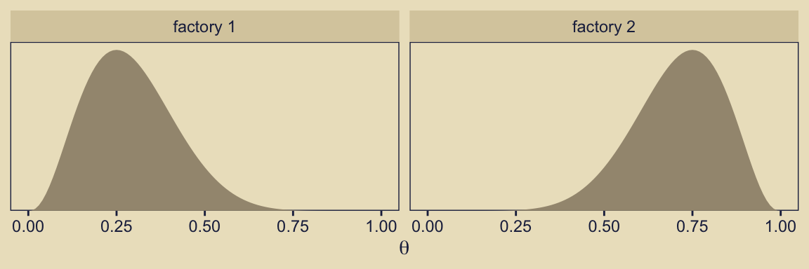
We might recreate the top panel with geom_col().
tibble(Model = c("1", "2"), y = 1) |>
ggplot(aes(x = Model, y = y)) +
geom_col(fill = kh[5], width = 0.75) +
scale_y_continuous(expand = expansion(mult = c(0, 0.05)))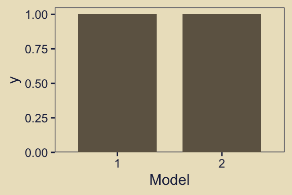
Consider the Bernoulli bar plots in the bottom panels of Figure 10.2. Often times, the heights of the bars in Kruschke’s model diagrams are arbitrary and just intended to give a sense of the Bernoulli distribution. This time, however, we might the values \(z = 6, N = 9\) Kruschke provided for the example at the top of page 270.
n <- 9
z <- 6
tibble(flip = factor(c("tails", "heads"), levels = c("tails", "heads")),
prob = c((n - z) / n, z / n)) |>
expand_grid(factory = str_c("factory ", 1:2)) |>
ggplot(aes(x = flip, y = prob)) +
geom_col(fill = kh[4], width = 0.75) +
scale_y_continuous(NULL, breaks = NULL,
expand = expansion(mult = c(0, 0.05))) +
xlab(NULL) +
theme(axis.ticks.x = element_blank(),
panel.grid = element_blank()) +
facet_wrap(~ factory)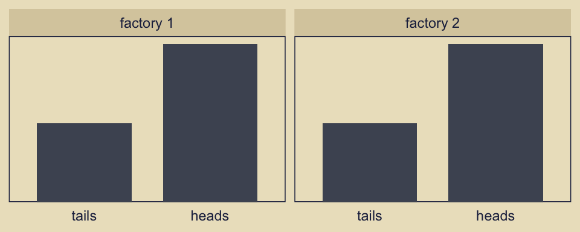
We read:
Suppose we flip the coin nine times and get six heads. Given those data, what are the posterior probabilities of the coin coming from the head-biased or tail-biased factories? We will pursue the answer three ways: via formal analysis, grid approximation, and MCMC. (p. 270)
Before we move on to a formal analysis, here’s a more faithful version of Kruschke’s Figure 10.2 based on the method from my blog post, Make model diagrams, Kruschke style.
p1 <- tibble(x = 1:2,
d = 0.75) |>
ggplot(aes(x = x, y = d)) +
geom_col(fill = alpha(kh[5], 0.9), width = 0.45) +
annotate(geom = "text",
x = 1.5, y = 0.2,
label = "categorical",
color = kh[1], size = 5) +
annotate(geom = "text",
x = 1.5, y = 0.85,
label = "italic(P[m])",
color = kh[1], family = "Times", parse = TRUE, size = 5) +
coord_cartesian(xlim = c(-0.5, 3.5),
ylim = 0:1) +
theme_void() +
theme(axis.line.x = element_line(color = kh[1], linewidth = 0.5))
## An annotated arrow
# Save our custom arrow settings
my_arrow <- arrow(angle = 20, length = unit(0.35, "cm"), type = "closed")
p2 <- tibble(x = 0.5,
y = 1,
xend = 0.5,
yend = 0) |>
ggplot(aes(x = x, xend = xend,
y = y, yend = yend)) +
geom_segment(arrow = my_arrow, color = kh[1]) +
annotate(geom = "text",
x = 0.375, y = 1/3,
label = "'~'",
color = kh[1], family = "Times", parse = TRUE, size = 10) +
xlim(0:1) +
ylim(0:1) +
theme_void()
p3 <- tibble(x = seq(from = 0.01, to = 0.99, by = 0.01),
d = (dbeta(x, 5, 10) / max(dbeta(x, 5, 10)))) |>
ggplot(aes(x = x, y = d)) +
geom_area(fill = alpha(kh[4], 0.85)) +
annotate(geom = "text",
x = 0.5, y = 0.2,
label = "beta",
color = kh[1], size = 5) +
annotate(geom = "text",
x = 0.5, y = 0.6,
label = "list(italic(A)[1], italic(B)[1])",
color = kh[1], family = "Times", parse = TRUE, size = 5) +
scale_x_continuous(expand = c(0, 0)) +
ylim(0:1) +
theme_void() +
theme(axis.line.x = element_line(color = kh[1], linewidth = 0.5))
p4 <- tibble(x = seq(from = 0.01, to = 0.99, by = 0.01),
d = (dbeta(x, 10, 5) / max(dbeta(x, 10, 5)))) |>
ggplot(aes(x = x, y = d)) +
geom_area(fill = kh[6]) +
annotate(geom = "text",
x = 0.5, y = 0.2,
label = "beta",
color = kh[1], size = 5) +
annotate(geom = "text",
x = 0.5, y = 0.6,
label = "list(italic(A)[2], italic(B)[2])",
color = kh[1], family = "Times", parse = TRUE, size = 5) +
scale_x_continuous(expand = c(0, 0)) +
ylim(0:1) +
theme_void() +
theme(axis.line.x = element_line(color = kh[1], linewidth = 0.5))
# Bar plot of Bernoulli data
p5 <- tibble(flip = factor(c("tails", "heads"), levels = c("tails", "heads")),
prob = c((n - z) / n, z / n)) |>
ggplot(aes(x = flip, y = prob)) +
geom_col(fill = alpha(kh[4], 0.85), width = 0.4) +
annotate(geom = "text",
x = 1.5, y = 0.15,
label = "Bernoulli",
color = kh[1], size = 7) +
annotate(geom = "text",
x = 1.5, y = 2/3,
label = "theta",
color = kh[1], family = "Times", parse = TRUE, size = 7) +
scale_x_discrete(expand = expansion(mult = 0.85)) +
scale_y_continuous(NULL, breaks = NULL,
expand = expansion(mult = c(0, 0.15))) +
theme_void() +
theme(axis.line.x = element_line(color = kh[1], linewidth = 0.5))
# Another bar plot of Bernoulli data
p6 <- tibble(flip = factor(c("tails", "heads"), levels = c("tails", "heads")),
prob = c((n - z) / n, z / n)) |>
ggplot(aes(x = flip, y = prob)) +
geom_col(fill = kh[6], width = 0.4) +
annotate(geom = "text",
x = 1.5, y = 0.15,
label = "Bernoulli",
color = kh[1], size = 7) +
annotate(geom = "text",
x = 1.5, y = 2/3,
label = "theta",
color = kh[1], family = "Times", parse = TRUE, size = 7) +
scale_x_discrete(expand = expansion(mult = 0.85)) +
scale_y_continuous(NULL, breaks = NULL,
expand = expansion(mult = c(0, 0.15))) +
theme_void() +
theme(axis.line.x = element_line(color = kh[1], linewidth = 0.5))
# Another annotated arrow
p7 <- tibble(x = c(0.375, 0.625),
y = 1/3,
label = c("'~'", "italic(i)")) |>
ggplot(aes(x = x, y = y, label = label)) +
geom_text(family = "Times", parse = TRUE, size = c(10, 7)) +
geom_segment(x = 0.5, xend = 0.5,
y = 1, yend = 0,
arrow = my_arrow, color = kh[1]) +
xlim(0:1) +
ylim(0:1) +
theme_void()
# Some text
p8 <- tibble(x = 1,
y = 0.5,
label = "italic(y[i])") |>
ggplot(aes(x = x, y = y, label = label)) +
geom_text(color = kh[1], family = "Times", parse = TRUE, size = 7) +
xlim(0, 2) +
ylim(0:1) +
theme_void()
# Dashed borders
p9 <- tibble(x = c(0, 0.999, 0.999, 0, 1.001, 2, 2, 1.001),
y = rep(0:1, each = 2) |> rep(times = 2),
z = rep(letters[1:2], each = 4)) |>
ggplot(aes(x = x, y = y, group = z)) +
geom_shape(color = kh[1], fill = "transparent", linetype = 2,
radius = unit(1, "cm")) +
scale_x_continuous(NULL, breaks = NULL, expand = c(0, 0)) +
scale_y_continuous(NULL, breaks = NULL, expand = c(0, 0)) +
ylim(0:1) +
theme_void()
# Define the layout
layout <- c(
# Cat
area(t = 1, b = 5, l = 5, r = 9),
area(t = 6, b = 8, l = 5, r = 9),
# Beta
area(t = 9, b = 13, l = 2, r = 6),
area(t = 9, b = 13, l = 8, r = 12),
# Arrow
area(t = 14, b = 16, l = 2, r = 6),
area(t = 14, b = 16, l = 8, r = 12),
# Bern
area(t = 17, b = 21, l = 2, r = 6),
area(t = 17, b = 21, l = 8, r = 12),
area(t = 23, b = 25, l = 5, r = 9),
area(t = 26, b = 27, l = 5, r = 9),
area(t = 8, b = 23, l = 1, r = 13))
# Combine and plot!
(p1 + p2 + p3 + p4 + p2 + p2 + p5 + p6 + p7 + p8 + p9) +
plot_layout(design = layout) &
theme(plot.margin = margin(0, 5.5, 0, 5.5))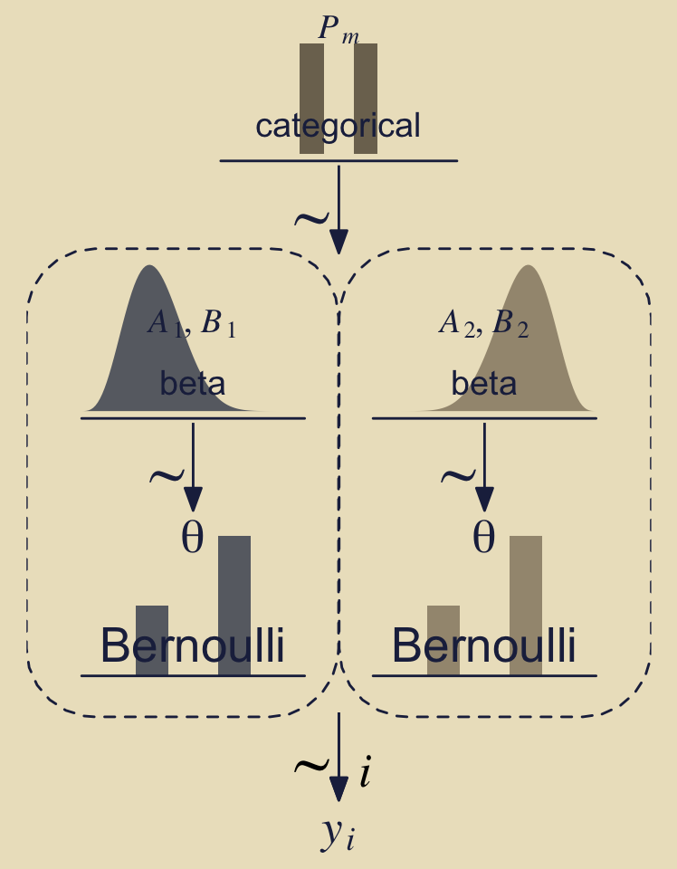
Note how we used the geom_shape() function from the ggforce package (Pedersen, 2021) to make the two dashed borders with the rounded edges. You can learn more from Pedersen’s (n.d.) vignette, Draw polygons with expansion/contraction and/or rounded corners — geom_shape.
One thing we might rehearse before moving on is that that figure depicts two models, and each of of the models is represented within one of the dashed areas. By model, we mean \(p_m(D \mid \theta_m, m)\ p_m(\theta_m \mid m)\), conceptualized as a data-generating function.
10.2.1 Solution by formal analysis
Here we rehearse if we have a \(\operatorname{Beta}(\theta, a, b)\) prior for \(\theta\) of the Bernoulli likelihood function, then the analytic solution for the posterior is \(\operatorname{Beta}(\theta \mid z + a, N – z + b)\). Within this paradigm, if you would like to compute \(p(D \mid m)\), don’t use the following function. If suffers from underflow with large values.
# Naive, don't use
p_d <- function(z, n, a, b) {
beta(z + a, n - z + b) / beta(a, b)
}This version is more robust.
# Robust, do use
p_d <- function(z, n, a, b) {
exp(lbeta(z + a, n - z + b) - lbeta(a, b))
}You’d use our p_d() function like this to compute \(p(D \mid m_1)\).
p_d(z = 6, n = 9, a = 3.5, b = 8.5)[1] 0.0004993439So to compute our \(\textit{BF}\), \(\frac{p(D \mid m_1)}{p(D \mid m_2)}\), you might use the p_d() function like this.
p_d_1 <- p_d(z = 6, n = 9, a = 3.5, b = 8.5)
p_d_2 <- p_d(z = 6, n = 9, a = 8.5, b = 3.5)
p_d_1 / p_d_2[1] 0.2135266If we computed the \(\textit{BF}\) the other way, it’d look like this.
p_d_2 / p_d_1[1] 4.683258Since the \(\textit{BF}\) itself is only \(\textit{BF} = \frac{p(D \mid m = 1)}{p(D \mid m = 2)}\), we’d need to bring in the priors for the models themselves to get the posterior probabilities, which follows the form
\[\frac{p(m = 1 \mid D)}{p(m = 2 \mid D)} = \left [\frac{p(D \mid m = 1)}{p(D \mid m = 2)} \right ] \left [ \frac{p(m = 1)}{p(m = 2)} \right].\]
If for both our models \(p(m) = 0.5\), then we can compute \(\frac{p(m = 1 \mid D)}{p(m = 2 \mid D)}\) like so.
(p_d_1 * 0.5) / (p_d_2 * 0.5)[1] 0.2135266As Kruschke pointed out, because we’re working in the probability metric, the sum of \(p(m = 1 \mid D)\) and \(p(m = 2 \mid D)\) must be 1. By simple algebra then,
\[p(m = 2 \mid D) = 1 - p(m = 1 \mid D).\]
Therefore, it’s also the case that
\[\frac{p(m = 1 \mid D)}{1 - p(m = 1 \mid D)} = 0.2135266.\]
Thus, our value for \(\frac{p(m = 1 \mid D)}{p(m = 2 \mid D)}\), which is 0.2135266, is in an odds metric. If you want to convert odds to a probability, you follow the formula
\[\text{probability} = \frac{\text{odds}}{1 + \text{odds}}.\]
Thus, the posterior probability for \(m = 1\) is
\[p(m = 1 \mid D) = \frac{0.2135266}{1 + 0.2135266} = 0.1759554.\]
We can express that in code like so.
odds <- (p_d_1 * 0.5) / (p_d_2 * 0.5)
odds / (1 + odds)[1] 0.1759554Relative to \(m = 2\), our posterior probability for \(m = 1\) is about 0.18. Therefore the posterior probability of \(m = 2\) is 1 minus that value.
1 - (odds / (1 + odds))[1] 0.8240446Given the data, the two models and the prior assumption both models were equally credible, we conclude \(m = 2\) is about 0.82 probable.
10.2.2 Solution by grid approximation
Before we jump to making Figure 10.3, we should take note of how Kruschke adjusted the notation in this section from the notation he used in the last section. At the bottom of page 271, we read:
In our current scenario, the model index, \(m\), determines the value of the factory mode, \(\omega_m\). Therefore, instead of thinking of a discrete indexical parameter \(m\), we can think of the continuous mode parameter \(\omega\) being allowed only two discrete values by the prior.
To show what this means in practice, here we make the initial version of the primary data frame d. The omega column provides an index for a sequence of models \((m)\), each defined by its mode \((\omega)\). The kappa column has a constant value 12, and we use some familiar algebra to define the values in the a and b columns, based on those omega and kappa values. In the prior_omega column we define the prior probability of each model with an ifelse() statement. Then within expand_grid() we apply a dense comb of theta values to each level of omega.
d <- tibble(omega = seq(from = 0.005, to = 0.995, by = 0.005),
kappa = 12) |>
mutate(a = omega * (kappa - 2) + 1,
b = (1 - omega) * (kappa - 2) + 1,
prior_omega = ifelse(omega %in% c(0.25, 0.75), 0.5, 0)) |>
expand_grid(theta = seq(from = 0, to = 1, length.out = length))
# What?
glimpse(d)Rows: 20,099
Columns: 6
$ omega <dbl> 0.005, 0.005, 0.005, 0.005, 0.005, 0.005, 0.005, 0.005, 0.005, 0.005, 0.005, 0.005, 0.005, 0.005, 0.005, 0.0…
$ kappa <dbl> 12, 12, 12, 12, 12, 12, 12, 12, 12, 12, 12, 12, 12, 12, 12, 12, 12, 12, 12, 12, 12, 12, 12, 12, 12, 12, 12, …
$ a <dbl> 1.05, 1.05, 1.05, 1.05, 1.05, 1.05, 1.05, 1.05, 1.05, 1.05, 1.05, 1.05, 1.05, 1.05, 1.05, 1.05, 1.05, 1.05, …
$ b <dbl> 10.95, 10.95, 10.95, 10.95, 10.95, 10.95, 10.95, 10.95, 10.95, 10.95, 10.95, 10.95, 10.95, 10.95, 10.95, 10.…
$ prior_omega <dbl> 0, 0, 0, 0, 0, 0, 0, 0, 0, 0, 0, 0, 0, 0, 0, 0, 0, 0, 0, 0, 0, 0, 0, 0, 0, 0, 0, 0, 0, 0, 0, 0, 0, 0, 0, 0, …
$ theta <dbl> 0.00, 0.01, 0.02, 0.03, 0.04, 0.05, 0.06, 0.07, 0.08, 0.09, 0.10, 0.11, 0.12, 0.13, 0.14, 0.15, 0.16, 0.17, …Next, we define the prior values for \(\theta\), what we have traditionally called \(p(\theta)\) in mathematical notation. Within our model-comparison framework where we’re using \(\omega\) as an index for a sequence of models defined by their prior modes, we might more fully call that prior \(p_\omega(\theta_\omega \mid \omega)\). Regardless of our new naming complexities, we still define the prior in code using the dbeta() function.
d <- d |>
mutate(prior_theta_d = dbeta(x = theta, shape1 = a, shape2 = b))We have saved the results as prior_theta_d. The first two parts of the name prior_theta_d are meant to help differentiate this as the prior for \(\theta\), rather than the prior for the model, which we have already saved in the prior_omega column. We do have another complication, however. As we will see shortly, some of the panels in Kruschke’s Figure 10.3 are based on \(p_\omega(\theta_\omega \mid \omega)\) as expressed in the metric of the beta density, such as we have computed with the dbeta() function. We started using these sensibilities back in Chapter 6, where we learned about analytic solutions, and introduced the beta distribution for probability parameters, such as \(\theta\). Yet other panels in Figure 10.3 are displayed in metrics that indicate Kruschke was using the prior in a probability metric that sums to one, such as we practiced in Chapter 5 with grid approximation. For those panels, we need another column in the d data frame.
d <- d |>
group_by(omega) |>
# Normalize `prior_theta` to a probability mass scale
mutate(prior_theta_p = prior_theta_d / sum(prior_theta_d)) |>
ungroup()
# What?
glimpse(d)Rows: 20,099
Columns: 8
$ omega <dbl> 0.005, 0.005, 0.005, 0.005, 0.005, 0.005, 0.005, 0.005, 0.005, 0.005, 0.005, 0.005, 0.005, 0.005, 0.005, 0…
$ kappa <dbl> 12, 12, 12, 12, 12, 12, 12, 12, 12, 12, 12, 12, 12, 12, 12, 12, 12, 12, 12, 12, 12, 12, 12, 12, 12, 12, 12…
$ a <dbl> 1.05, 1.05, 1.05, 1.05, 1.05, 1.05, 1.05, 1.05, 1.05, 1.05, 1.05, 1.05, 1.05, 1.05, 1.05, 1.05, 1.05, 1.05…
$ b <dbl> 10.95, 10.95, 10.95, 10.95, 10.95, 10.95, 10.95, 10.95, 10.95, 10.95, 10.95, 10.95, 10.95, 10.95, 10.95, 1…
$ prior_omega <dbl> 0, 0, 0, 0, 0, 0, 0, 0, 0, 0, 0, 0, 0, 0, 0, 0, 0, 0, 0, 0, 0, 0, 0, 0, 0, 0, 0, 0, 0, 0, 0, 0, 0, 0, 0, 0…
$ theta <dbl> 0.00, 0.01, 0.02, 0.03, 0.04, 0.05, 0.06, 0.07, 0.08, 0.09, 0.10, 0.11, 0.12, 0.13, 0.14, 0.15, 0.16, 0.17…
$ prior_theta_d <dbl> 0.00000000, 9.13357767, 8.54715723, 7.87599730, 7.20729849, 6.56703170, 5.96486262, 5.40419461, 4.88555742…
$ prior_theta_p <dbl> 0.0000000000, 0.0956712649, 0.0895287009, 0.0824985183, 0.0754941149, 0.0687875280, 0.0624800021, 0.056607…Thus we have two columns for the prior of \(\theta\), what we’ve called \(p_\omega(\theta_\omega \mid \omega)\) in mathematical notation. The first column, prior_theta_d, is in the beta-density metric, such as we introduced in Chapter 6. The _d suffix stands for “density.” The second column, prior_theta_p, is in a probability metric that sums to one, such as we practiced in Chapter 5. The _p suffix stands for “probability.”
I’m sorry this has to be so technical, but this is what it takes to complete our task. Onward!
As in earlier chapters, we won’t be able to make the wireframe plots on the left of Figure 10.3. We will start, instead, by making the plot in the second column of the first row. We’ll save the object as p12, where the numbers indicate the row and column, respectively. Here is the code and its results.
p12 <- d |>
ggplot(aes(x = theta, y = omega, fill = prior_theta_d * prior_omega)) +
geom_raster(interpolate = TRUE) +
scale_x_continuous(expression(theta), breaks = 0:5 / 5, expand = c(0, 0)) +
scale_y_continuous(expression(omega), breaks = 0:5 / 5, expand = c(0, 0), limits = 0:1) +
scale_fill_gradient(expression(p(theta[omega])), low = kh[1], high = kh[9])
p12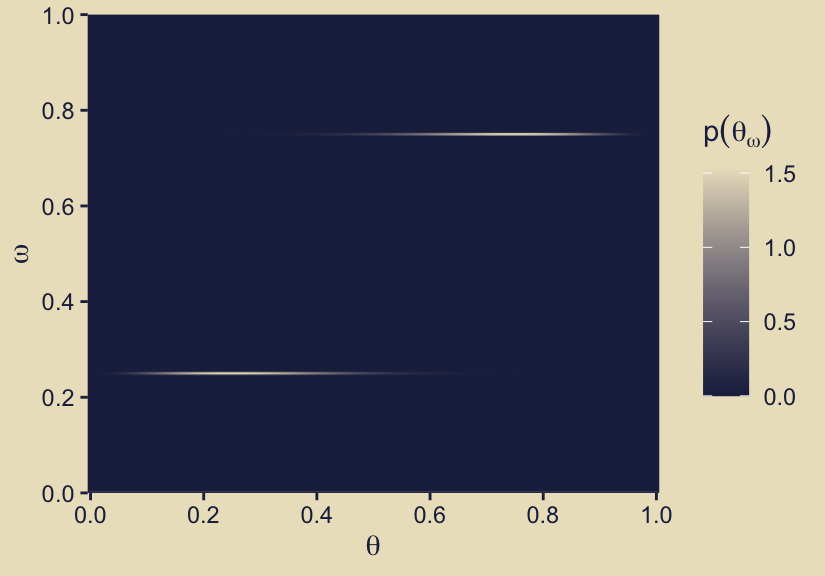
In the body of Figure 10.3, as well as in the surrounding prose, Kruschke referred to the third dimension of this figure as the “prior.” I find that language a little vague however, given how we now have prior probabilities for parameters, as well as prior probabilities for the models in which we have embedded these parameters. To be more verbose with our notation, what we have plotted is \(p(\theta_\omega)\), which we can define as
\[ p(\theta_\omega) = p_\omega(\theta_\omega \mid \omega)\ p(\omega). \]
In words, we have multiplied the each model’s prior for \(\theta\) by the probability of that model, itself. In this figure, we are using the prior for \(\theta\) as expressed in the metric of the beta density, which is why we used prior_theta_d in the computation code within the aes() function. At the moment it might not be obvious why we have preferred prior_theta_d in this panel, but my hope is it will become more apparent when we make the panels in the second row. For now, notice that when we set fill = prior_theta * prior_omega within the aes() function, that is where we defined the fill gradient as \(p(\theta_\omega)\), what Kruschke called the “prior.” Do further note that the highest values for the fill dimension in the plot topped out at about 1.5.
Next we move to the third panel in the first row, what we will save as p13. Notice that the x-axis in the text ranges up to about 25, and the “Marginal \(p(\omega)\)” values Kruschke displayed along that axis took on the values of zero and 15 (or thereabouts). Near the top of page 273, Kruschke wrote: “The absolute scale on \(p(\omega)\) is irrelevant because it is the probability density for an arbitrary choice of grid approximation.” Based on personal communications with Kruschke, it looks like the scale of the x-axis in this panel is a mistake. It’s unclear how the mistake made it’s way into the published text, but I’m now confident Kruschke meant this scale to range from zero to one, and that the values that appear around 15 should actually be 0.5.
In the initial code chunk for the d data, we defined the prior probabilities for each level of \(\omega\) as prior_omega = ifelse(omega %in% c(0.25, 0.75), 0.5, 0). Those are our “\(p(\omega)\)” values. By the language of “Marginal \(p(\omega)\),” Kruschke is indicating he was summing over other dimensions. For each level of the theta sequence in our data, Kruschke multiplied \(p(\omega)\) by \(p_\omega(\theta_\omega \mid \omega)\) for that respective theta point, and them summed up the products. In more formal notation, I believe we could describe that as
\[ \sum_{\theta_\omega} p_\omega(\theta_\omega \mid \omega)\ p(\omega), \]
But since we just learned above that that product term over which we’re summing is also called \(p(\theta_\omega)\), we can re-write that equation as
\[ \sum_{\theta_\omega} p(\theta_\omega), \]
where we are summing the \(p(\theta_\omega)\) values across the parameter space \(\theta\), separately for each level of the model space \(\omega\).
From a computational standpoint, the question is: Do we use the \(p_\omega(\theta_\omega \mid \omega)\) term in the beta-density metric (prior_theta_d) or in the probability metric (prior_theta_p)? For this panel in Figure 10.3, the answer is prior_theta_p. To help show why, here’s a plot that’s not in the text.
d |>
filter(omega %in% c(0.20, 0.25)) |>
group_by(omega) |>
mutate(product = prior_theta_p * prior_omega) |>
pivot_longer(cols = prior_theta_p:product) |>
mutate(key = ifelse(name == "prior_theta_p",
"p(theta)",
"p(theta)*p(omega)"),
facet = str_c("{omega==", omega, "}*'; '*p(omega)==", prior_omega)) |>
ggplot(aes(x = theta, y = value, color = key, shape = key)) +
geom_point(size = 2) +
scale_x_continuous(expression(theta), breaks = 0:5 / 5, expand = c(0, 0),
labels = c(0, 1:4 / 5, 1)) +
scale_y_continuous(NULL, expand = expansion(mult = c(0, 0.1))) +
scale_color_manual(NULL, values = kh[c(6, 4)], labels = scales::parse_format()) +
scale_shape_manual(NULL, values = c(20, 18), labels = scales::parse_format()) +
guides(colour = guide_legend(position = "inside"),
shape = guide_legend(position = "inside")) +
facet_wrap(~ facet, labeller = label_parsed) +
theme(legend.position.inside = c(0.90, 0.85),
panel.spacing.x = unit(0.75, "lines"))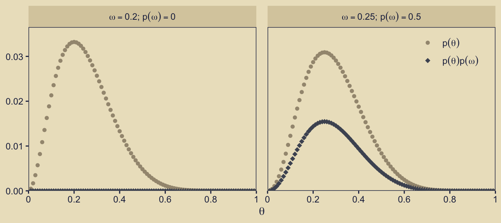
In this plot, we’re just highlighting two of our models, \(\omega = 0.2\) and \(\omega = 0.25\), which you can see indicated in the facet strip labels on the top of the panels. The x-axis is the \(\theta\) sequence. On the y-axis, we are showing the corresponding prior_theta_p values in two ways. With the beige circular dots, we have shown those values as the are in the d data frame. Those values are in the probability metric, and thus they will sum to one within each level of \(\omega\) (i.e., within each facet of the plot). With the dark-blue diamond dots, we have depicted those same values as multiplied by prior_omega, \(p(\omega)\). As \(p(\omega) = 0\) for the panel on the left, the product of \(p(\theta)\) and \(p(\omega)\) is zero in all cases. But as \(p(\omega) = 0.5\) for the panel on the right, which shows one of our focal models for this section of the the text, the heights for the \(p(\theta)p(\omega)\) dots are always half of their corresponding \(p(\theta)\) values. And thus just as when you sum prior_theta_p to one in the right facet, you sum prior_theta_p * prior_omega to 0.5. This is what we want for the correct version of Figure 10.3, row 1, column 3. Here’s the plot.
p13 <- d |>
group_by(omega) |>
summarise(marginal_prior_omega = sum(prior_omega * prior_theta_p)) |>
ggplot(aes(xmin = 0, xmax = marginal_prior_omega, y = omega)) +
geom_linerange(color = kh[4]) +
scale_x_continuous(expression(Marginal~p(omega)), expand = c(0, 0), limits = 0:1) +
scale_y_continuous(expression(omega), expand = c(0, 0), limits = 0:1)
p13 + labs(subtitle = "Our x-axis differs from the text.")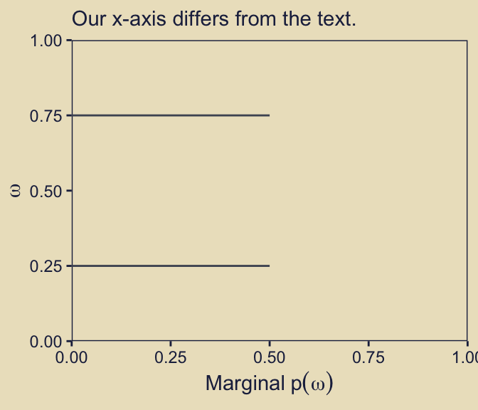
What Kruschke called “Marginal \(p(\omega)\)” is
\[ \sum_{\theta_\omega} p_\omega(\theta_\omega \mid \omega)\ p(\omega), \]
which we have realized in code as:
d |>
group_by(omega) |>
summarise(marginal_prior_omega = sum(prior_theta_p * prior_omega)) |>
glimpse()Rows: 199
Columns: 2
$ omega <dbl> 0.005, 0.010, 0.015, 0.020, 0.025, 0.030, 0.035, 0.040, 0.045, 0.050, 0.055, 0.060, 0.065, 0.070, 0…
$ marginal_prior_omega <dbl> 0, 0, 0, 0, 0, 0, 0, 0, 0, 0, 0, 0, 0, 0, 0, 0, 0, 0, 0, 0, 0, 0, 0, 0, 0, 0, 0, 0, 0, 0, 0, 0, 0, …And you’ll note that the sum of those marginal values is indeed one.
d |>
group_by(omega) |>
summarise(marginal_prior_omega = sum(prior_theta_p * prior_omega)) |>
summarise(sum_of_marginal_prior_omega = sum(marginal_prior_omega))# A tibble: 1 × 1
sum_of_marginal_prior_omega
<dbl>
1 1Building on those sensibilities, next we turn to the panel in the second column of the second row. On page 273 in the text, Kruschke described this as
the marginal prior distribution on \(\theta\) when averaging across models. Specifically, the middle panel of the second row shows \(p(\theta)\), where you can see it is a bimodal distribution. This illustrates that the overall model structure, as a whole, asserts that biases are probability near 0.25 or 0.75.
In that panel we’re literally depicting what we might describe as
\[ \sum_{\omega_\theta} p_\omega(\theta_\omega \mid \omega)\ p(\omega), \]
which is summing over the prior probability of the parameter given the model, \(p_\omega(\theta_\omega \mid \omega)\), multiplied by the prior probability for the model itself, \(p(\omega)\), separately for each level of \(\theta\). This summation operation is similar to the one we just did above, but with the positioning of the \(\omega\) and \(\theta\) terms inverted below the summation symbol \(\sum\). And recall that since we learned the product term over which we are summing is also called \(p(\theta_\omega)\), we can re-write that equation as
\[ \sum_{\omega_\theta} p(\theta_\omega). \]
Perhaps frustratingly, this time we are using the prior_theta_d version of \(p_\omega(\theta_\omega \mid \omega)\), not prior_theta_p as in the last panel. If you focus closely to the metric of the y-axis, you’ll get a clue as to why.
p22 <- d |>
group_by(theta) |>
summarise(marginal_prior = sum(prior_theta_d * prior_omega)) |>
ggplot(aes(x = theta, y = marginal_prior)) +
geom_area(fill = kh[4]) +
scale_x_continuous(expression(theta), breaks = 0:5 / 5, expand = c(0, 0)) +
scale_y_continuous(expression(Marginal~p(theta)),
expand = expansion(mult = c(0, 0.05)), limits = c(0, 3.33))
p22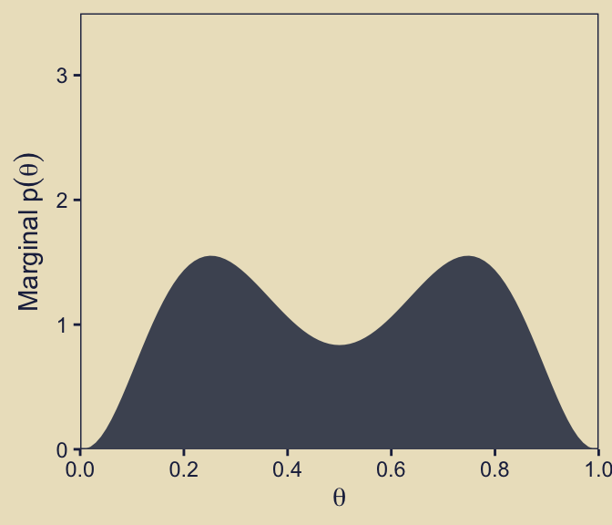
The maximum value on the y-axis is a little above 1.5 for both modes. Compare that to the highest values in the fill gradient back in the plot for our first panel, p12. To further demystify what we’re depicting, it might help if we made a variation of that plot where we use a stacked area plot, with the fill grouped by omega.
d |>
filter(omega %in% c(0.25, 0.75)) |>
group_by(theta) |>
mutate(prior_theta_omega = prior_theta_d * prior_omega,
omega = factor(omega, levels = c(0.75, 0.25))) |>
ggplot(aes(x = theta, y = prior_theta_omega,
group = omega, fill = omega)) +
geom_area() +
scale_x_continuous(expression(theta), breaks = 0:5 / 5, expand = c(0, 0)) +
scale_y_continuous(expression(Marginal~p(theta)),
expand = expansion(mult = c(0, 0.05)), limits = c(0, 3.33)) +
scale_fill_manual(expression(omega), values = kh[5:6])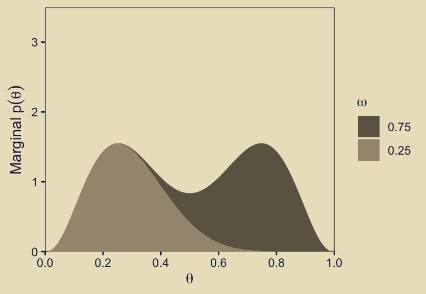
By summing over the values of \(p(\theta_\omega)\), we are metaphorically stacking the density values one atop the other.
Now we turn our attention to the panel in the third column of the second row. For this, we’ll show the \(\theta\) priors for the two focal models, \(\omega \in \{0.25, 0.75\}\), in a faceted plot. And just as in the last panel, we use the prior_theta_d version of \(p_\omega(\theta_\omega \mid \omega)\) to return the values in the metric of the beta densities.
omega_levels <- str_c("omega == ", c(0.75, 0.25))
p23 <- d |>
filter(omega %in% c(0.25, 0.75)) |>
mutate(omega = factor(str_c("omega == ", omega), levels = omega_levels)) |>
ggplot(aes(x = theta, y = prior_theta_d)) +
geom_area(fill = kh[4]) +
scale_x_continuous(expression(theta), breaks = 0:5 / 5, expand = c(0, 0)) +
scale_y_continuous(expression(Marginal~p(theta*"|"*omega)),
expand = expansion(mult = c(0, 0.05)), limits = c(0, 4)) +
facet_wrap(~ omega, ncol = 1, labeller = label_parsed) +
theme(strip.text = element_text(margin = margin(b = 1, t = 1)))
p23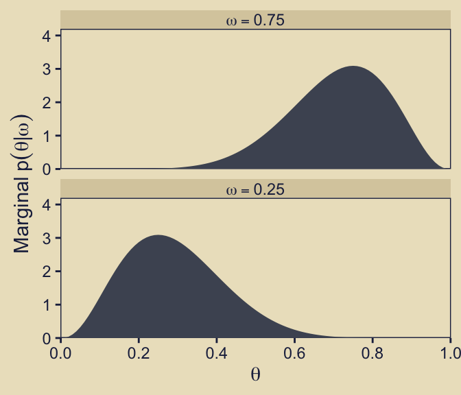
Both facets show the priors for the two focal models in the metric of their respective beta densities. Both beta densities have maximum values at about 3. Thus when we multiplied those beta-density values by their 0.5 \(p(\omega)\) values for the fill gradient in p12, their maximum values reduced to about 1.5.
Next we turn to the likelihood. Since the likelihood can in principle differ by each model, we might refer to each model’s likelihood as \(p_\omega(D \mid \theta_\omega, \omega)\). In code, we simply need to feed the data-summary values (\(z\) and \(N\)) and the grid of \(\theta\) values into the old dbern() function. The row structure of the d data frame is already set up to compute these likelihood values separately by each model, \(\omega\). Thus, we might just save the results as likelihood. Then we can make the 2-dimensional density plot of the likelihood at the heart of Figure 10.3.
# Define the `dbern()` function
dbern <- function(x, z = NULL, n = NULL) {
x^z * (1 - x)^(n - z)
}
# Define the data
z <- 6; n <- 9
# Compute the likelihood
d <- d |>
mutate(likelihood = dbern(x = theta, z = z, n = n))
# Plot
p32 <- d |>
ggplot(aes(x = theta, y = omega, fill = likelihood)) +
geom_raster(interpolate = TRUE) +
scale_x_continuous(expression(theta), breaks = 0:5 / 5, expand = c(0, 0)) +
scale_y_continuous(expression(omega), breaks = 0:5 / 5, expand = c(0, 0), limits = 0:1) +
scale_fill_gradient(expression(p[omega]('D|'*theta[omega]*', '*omega)),
low = kh[1], high = kh[9])
p32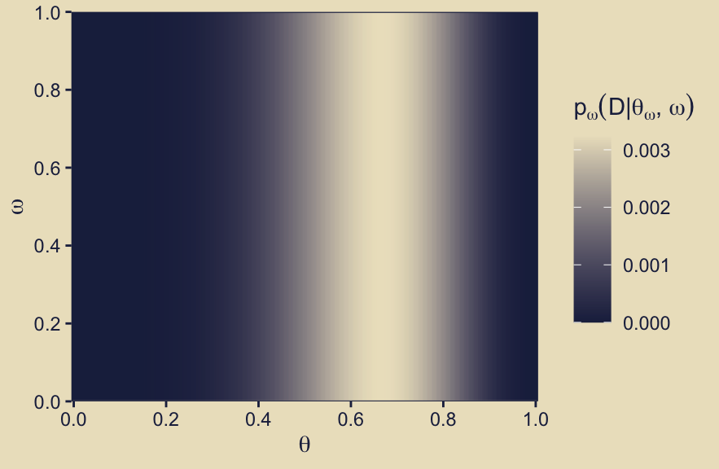
Though each model differs by the prior, \(p_\omega(\theta_\omega \mid \omega)\), they all share the same structure for the likelihood. Thus in this case we can reduce our verbose likelihood notation \(p_\omega(D \mid \theta_\omega, \omega)\) to the simpler conventional notation \(p(D \mid \theta)\), which Kruschke also discussed in his caption for Figure 10.1 (p. 267).
At this point in the text (the middle of page 273), Kruschke wrote:
The posterior distribution is shown in the lower two rows of Figure 10.3. The posterior distribution was computed at each point of the \(\langle \theta, \omega \rangle\) grid by multiplying prior times likelihood, and then normalizing (exactly as done for previous grid approximations such as in Figure 9.2, p. 227).
I think we need a little more detail to pull this off in code. For the next step, we’ll want to compute the marginal likelihood for each model. In the context of our \(\omega\) paradigm, this is
\[ p(D \mid \omega) = \sum_{\theta_\omega} p_\omega(D \mid \theta_\omega, \omega)\ p_\omega(\theta_\omega \mid \omega), \]
which just means we’re summing the product of likelihood and prior for \(\theta\) separately within each level of the model \(\omega\). We’ll save the results as marginal_likelihood_omega. Here’s the computation.
d <- d |>
group_by(omega) |>
mutate(marginal_likelihood_omega = sum(likelihood * prior_theta_d)) |>
ungroup()Again, \(p(D \mid \omega)\) means we have a unique marginal likelihood value for each model. Though it wasn’t done in the text, it might be worth showcasing those values in a plot.
d |>
distinct(omega, marginal_likelihood_omega) |>
ggplot(aes(x = omega, y = marginal_likelihood_omega)) +
geom_point(color = kh[4], size = 2/3) +
geom_segment(data = d |>
distinct(omega, marginal_likelihood_omega) |>
filter(omega %in% c(0.75, 0.25)),
aes(y = 0, yend = marginal_likelihood_omega - 0.004),
arrow = arrow(length = unit(0.06, "inches")),
color = kh[5], linewidth = 1/3) +
scale_x_continuous(expand = c(0, 0), limits = 0:1) +
scale_y_continuous(expand = expansion(mult = c(0, 0.05))) +
labs(x = expression(omega),
y = expression(p(D*'|'*omega)),
subtitle = "This plot is not in the text.")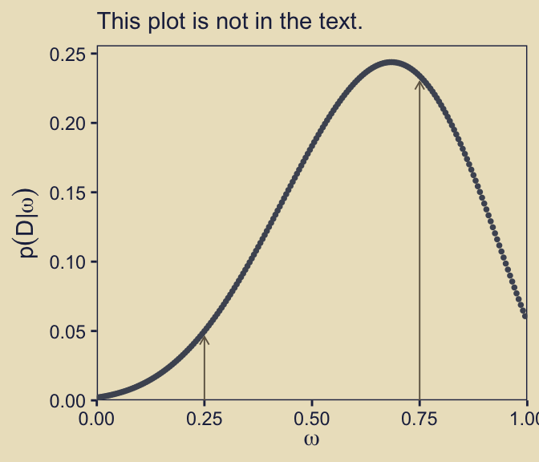
I added the vertical arrows to help mark off the marginal likelihood values for our two focal models, \(\omega = 0.25\) and \(\omega = 0.75\). Just to rehearse, we compute Bayes factors by taking ratios of any two values in that plot. For example, here’s one way we might compute \(\textit{BF}_{\omega_{0.75} / \omega_{0.25}}\).
d |>
distinct(omega, marginal_likelihood_omega) |>
summarise(bf = marginal_likelihood_omega[omega == 0.75] /
marginal_likelihood_omega[omega == 0.25])# A tibble: 1 × 1
bf
<dbl>
1 4.68Just as you would hope, that value matches nicely with the Bayes factor value Kruschke reported in the middle of page 273.
Anyway, now we have the marginal likelihood each model, \(p(D \mid \omega)\), we can compute the posterior probabilities for the models, \(p(\omega \mid D)\), which we can define as
\[ p(\omega \mid D) = \frac{p(D \mid \omega)\ p(\omega)}{\sum_\omega p(D \mid \omega)\ p(\omega)}. \]
Computationally, it might make sense to save these values as a separate data frame called d_posterior_omega.
d_posterior_omega <- d |>
distinct(omega, prior_omega, marginal_likelihood_omega) |>
mutate(posterior_omega = (marginal_likelihood_omega * prior_omega) /
sum(marginal_likelihood_omega * prior_omega))
# What?
d_posterior_omega |>
arrange(desc(posterior_omega), omega) |>
head()# A tibble: 6 × 4
omega prior_omega marginal_likelihood_omega posterior_omega
<dbl> <dbl> <dbl> <dbl>
1 0.75 0.5 0.234 0.824
2 0.25 0.5 0.0499 0.176
3 0.005 0 0.00226 0
4 0.01 0 0.00251 0
5 0.015 0 0.00277 0
6 0.02 0 0.00306 0 The values in the posterior_omega column are the posterior probabilities for each model, as indexed by \(\omega\), in a true probability metric. Thus, the posterior_omega columns will sum to one. Note that in the second half of the code chunk we have sorted the data in descending order by posterior_omega. Due largely to the values in the prior_omega column, \(p(\omega \mid D) = 0\) for all models except our focal models \(\omega \in \{0.25, 0.75\}\). Further, the ratio of the two non-zero \(p(\omega \mid D)\) values gives the odds of one model over the other. Here we compute that ratio both ways.
d_posterior_omega |>
summarise(posterior_odds_0.75_over_0.25 = posterior_omega[omega == 0.75] / posterior_omega[omega == 0.25],
posterior_odds_0.25_over_0.75 = posterior_omega[omega == 0.25] / posterior_omega[omega == 0.75])# A tibble: 1 × 2
posterior_odds_0.75_over_0.25 posterior_odds_0.25_over_0.75
<dbl> <dbl>
1 4.68 0.214Because both models had the same prior probability, 0.5, their posterior odds are the same as \(\textit{BF}_{\omega_{0.75} / \omega_{0.25}}\) and \(\textit{BF}_{\omega_{0.25} / \omega_{0.75}}\), respectively.
Within our grid approach, we can still just use the old formula \(\operatorname{beta}(\theta \mid z + a, N - z + b)\) from back in Section 6.3 to compute the posterior probability for \(\theta\), within each model \(\omega\). In mathematical notation, we might call these values \(p_\omega(\theta_\omega \mid D, \omega)\). In the d data frame, we’ll save them as posterior_theta_d. But just as with the priors for \(\theta\), it will also come in handy to have a version of those values in a probability metric, rather than in a beta-density metric. We’ll save those results in a column called posterior_theta_p. Then we’ll add the posterior model probabilities posterior_omega to the data frame by way of a left_join() call.
d <- d |>
mutate(posterior_theta_d = dbeta(x = theta, shape1 = z + a, shape2 = n - z + b)) |>
group_by(omega) |>
# Normalize `posterior_theta` to a probability mass scale
mutate(posterior_theta_p = posterior_theta_d / sum(posterior_theta_d)) |>
ungroup() |>
left_join(d_posterior_omega,
by = join_by(omega, prior_omega, marginal_likelihood_omega))We can now plot what Kruschke called the marginal \(p(\omega \mid D)\) values in our version of the panel in the fourth row and third column.
p43 <- d |>
group_by(omega) |>
summarise(marginal_posterior_omega = sum(posterior_omega * posterior_theta_p)) |>
ggplot(aes(xmin = 0, xmax = marginal_posterior_omega, y = omega)) +
geom_linerange(color = kh[4]) +
scale_x_continuous(expand = c(0, 0), limits = 0:1) +
scale_y_continuous(expand = c(0, 0), limits = 0:1) +
labs(x = expression(Marginal~p(omega*'|'*D)),
y = expression(omega))
p43 + labs(subtitle = "Our x-axis differs from the text.")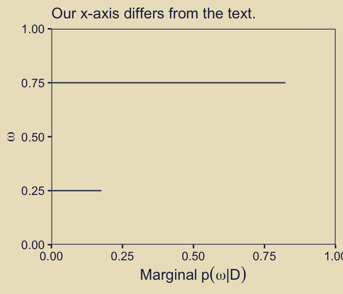
In more verbose notation, I believe we could describe those values as
\[ \sum_{\theta_\omega} p_\omega(\theta_\omega \mid D, \omega)\ p(\omega \mid D), \]
In words, we multiplied each model’s posterior for \(\theta\), what we’re calling \(p_\omega(\theta_\omega \mid D, \omega)\), by the posterior probability of that model itself, \(p(\omega \mid D)\). By \(\sum_{\theta_\omega}\), we are indicating we computed those values for each level of theta within our d data grid, and then summed them up separately (i.e., marginalize them) within each level of the model index \(\omega\).
In a similar move to what we did with the priors, we might consider simplifying the product term to \(p(\theta_\omega \mid D)\). That would leave us with the thriftier version of the equation
\[ \sum_{\theta_\omega} p(\theta_\omega \mid D). \]
But anyways, as Kruschke wrote in the text: “Visual inspection suggests that the ratio of the heights is about 5 to 1, which matches the Bayes factor of 4.68” (p. 273). We proactively confirmed that ratio and its relation to the Bayes factor in a code chunk a little above the one for our p43 plot.
Now we might turn our attention to the panel the second column of the fourth row. As an analogue to its sister panel, p12, this time we will use the fill gradient to depict \(p(\theta_\omega \mid D)\), which we just discussed in mathematical notation, above.
p42 <- d |>
ggplot(aes(x = theta, y = omega, fill = posterior_theta_d * posterior_omega)) +
geom_raster(interpolate = TRUE) +
scale_fill_gradient(expression(p(theta[omega]*'|'*D)), low = kh[1], high = kh[9]) +
scale_x_continuous(expression(theta), breaks = 0:5 / 5, expand = c(0, 0)) +
scale_y_continuous(expression(omega), breaks = 0:5 / 5, expand = c(0, 0), limits = 0:1)
p42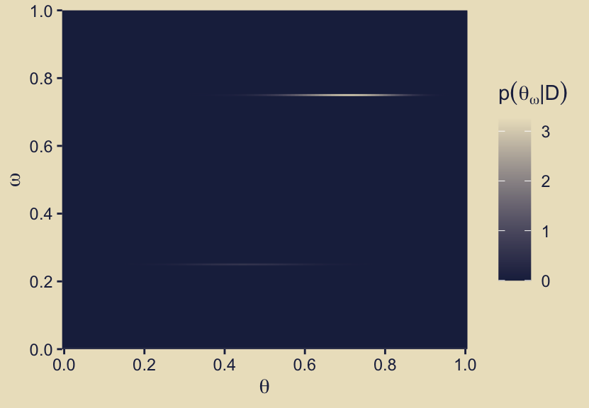
Notice how the maximum value in the fill gradient is about two times as high in this panel as it was for its analogue of the priors, p12. You might also compare these results of these two panels to related wireframe plots in Kruschke’s original version of Figure 10.3 in the text.
Building on those sensibilities, next we turn to the panel in the second column of the fifth row. In that panel we’re literally depicting
\[ \sum_{\omega_\theta} p_\omega(\theta_\omega \mid D, \omega)\ p(\omega \mid D), \]
which is summing over the posterior probability of the parameter given the model, \(p_\omega(\theta_\omega \mid D, \omega)\), multiplied by the posterior probability for the model itself \(p(\omega \mid D)\), separately for each level of \(\theta\). As has become our custom by this point, we can re-write that equation with the thriftier notation
\[ \sum_{\omega_\theta} p(\theta_\omega \mid D). \]
In his title for the y-axis, though, Kruschke further simplified the notation to \(p(\theta \mid D)\) by dropping the \(\omega\) subscript.
p52 <- d |>
group_by(theta) |>
summarise(marginal_posterior_theta = sum(posterior_theta_d * posterior_omega)) |>
ggplot(aes(x = theta, y = marginal_posterior_theta)) +
geom_area(fill = kh[4]) +
scale_x_continuous(expression(theta), breaks = 0:5 / 5, expand = c(0, 0)) +
scale_y_continuous(expression(Marginal~p(theta*"|"*D)),
expand = expansion(mult = c(0, 0.05)), limits = c(0, 3.33))
p52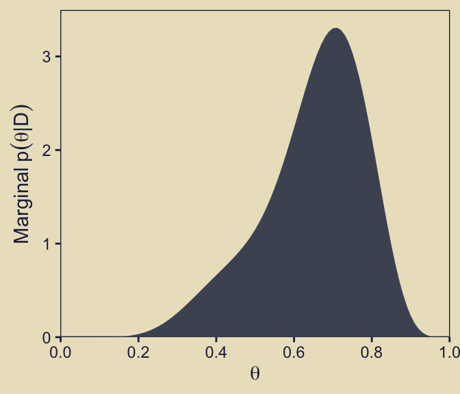
As we did with the prior analogue for this plot, here we’ll show this in a different way where we take a stacked area plot approach, with the fill color grouped by omega.
d |>
filter(omega %in% c(0.25, 0.75)) |>
mutate(posterior_theta_omega = posterior_theta_d * posterior_omega,
omega = factor(omega, levels = c(0.75, 0.25))) |>
ggplot(aes(x = theta, y = posterior_theta_omega,
group = omega, fill = omega)) +
geom_area() +
scale_x_continuous(expression(theta), breaks = 0:5 / 5, expand = c(0, 0)) +
scale_y_continuous(expression(Marginal~p(theta*"|"*D)),
expand = expansion(mult = c(0, 0.05)), limits = c(0, 3.33)) +
scale_fill_manual(expression(omega), values = kh[5:6])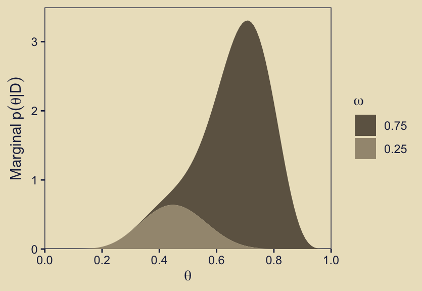
Buy summing over the values of \(p(\theta_\omega \mid D)\), we are metaphorically stacking the density values one atop the other.
Compare the height of the density of the official version of this plot, p52, to its analogue for the prior, p22. In the text, Kruschke described this panel as follows:
Given the data, the head-biased factory (with \(\omega = 0.75\)) is about five times more credible than the tail-biased factory (with \(\omega = 0.25\)), and the bias of the coin is near \(\theta = 0.7\) with uncertainty shown by the oddly-skewed distribution. (p. 273)
Now we make our version of the final panel, row five, column three. Here we depict the posterior distributions for \(\theta\) for the focal models, \(\omega \in \{0.25, 0.75\}\), in a faceted plot.
p53 <- d |>
filter(omega %in% c(0.25, 0.75)) |>
mutate(omega = factor(str_c("omega == ", omega), levels = omega_levels)) |>
ggplot(aes(x = theta, y = posterior_theta_d)) +
geom_area(fill = kh[4]) +
scale_x_continuous(expression(theta), breaks = 0:5 / 5, expand = c(0, 0)) +
scale_y_continuous(expression(Marginal~p(theta*"|"*omega*","*D)),
expand = expansion(mult = c(0, 0.05)), limits = c(0, 4)) +
facet_wrap(~ omega, ncol = 1, labeller = label_parsed) +
theme(strip.text = element_text(margin = margin(b = 1, t = 1)))
p53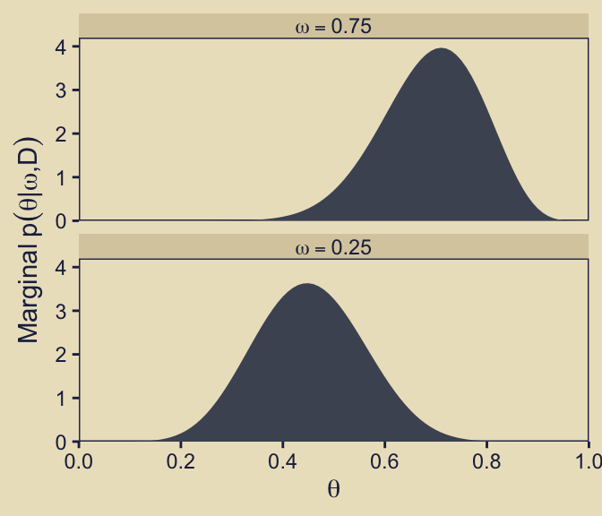
Finally, save a few more ggplots and combine them with the previous bunch to make the full version of Figure 10.3.
p21 <- tibble(x = 1,
y = 8:7,
label = c("Prior", "K==12"),
size = c(2, 1)) |>
ggplot(aes(x = x, y = y, label = label, size = size)) +
geom_text(color = kh[1], hjust = 0, parse = TRUE, show.legend = FALSE) +
scale_size_continuous(range = c(3.5, 5.5)) +
coord_cartesian(xlim = c(1, 2),
ylim = c(4, 11)) +
theme(axis.text = element_text(color = kh[9]),
axis.ticks = element_blank(),
panel.background = element_rect(color = kh[9]),
text = element_text(color = kh[9]))
p33 <- tibble(x = 1,
y = 8:7,
label = c("Likelihood", "D = 6 heads, 3 tails"),
size = c(2, 1)) |>
ggplot(aes(x = x, y = y, label = label, size = size)) +
geom_text(color = kh[1], hjust = 0, show.legend = FALSE) +
scale_size_continuous(range = c(3.5, 5.5)) +
coord_cartesian(xlim = c(1, 2),
ylim = c(4, 11)) +
theme(axis.text = element_text(color = kh[9]),
axis.ticks = element_blank(),
panel.background = element_rect(color = kh[9]),
text = element_text(color = kh[9]))
p51 <- ggplot() +
annotate(geom = "text",
x = 1, y = 8, label = "Posterior",
color = kh[1], hjust = 0, size = 6) +
coord_cartesian(xlim = c(1, 2),
ylim = c(3, 11)) +
theme(axis.text = element_text(color = kh[9]),
axis.ticks = element_blank(),
panel.background = element_rect(color = kh[9]),
text = element_text(color = kh[9]))
p11 <- plot_spacer()
p12 <- p12 + theme(legend.position = "none")
p32 <- p32 + theme(legend.position = "none")
p42 <- p42 + theme(legend.position = "none")
# Combine and plot!
(p11 | p12 | p13) / (p21 | p22 | p23) / (p11 | p32 | p33) / (p11 | p42 | p43) / (p51 | p52 | p53)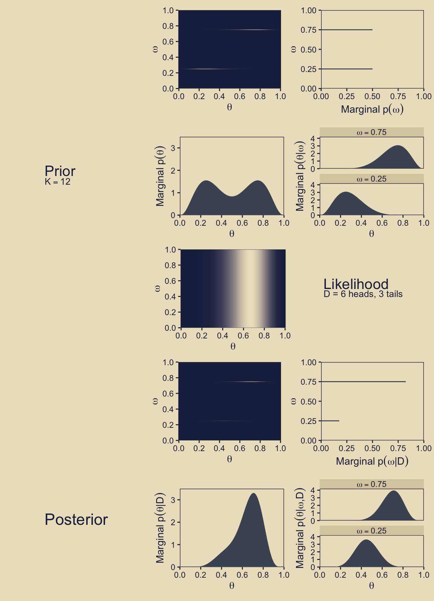
Oh mamma!
10.3 Solution by MCMC
Kruschke started with: “For large, complex models, we cannot derive \(p(D \mid m)\) analytically or with grid approximation, and therefore we will approximate the posterior probabilities using MCMC methods” (p. 274). He’s not kidding. Welcome to modern Bayes.
10.3.1 Nonhierarchical MCMC computation of each model’s marginal likelihood
Before you get excited, Kruschke warned: “For complex models, this method might not be tractable. [But] for the simple application here, however, the method works well, as demonstrated in the next section” (p. 277).
10.3.1.1 Implementation with JAGS brms
Let’s save the data as a tibble.
trial_data <- tibble(y = rep(0:1, times = c(n - z, z)))Time to learn a new brms skill. When you want to enter variables into the parameters defining priors in brms::brm(), you need to specify them using the stanvar() function. Since we want to do this for two variables, we’ll use stanvar() twice and save the results as an object, conveniently named stanvars.
omega <- 0.75
kappa <- 12
stanvars <- stanvar( omega * (kappa - 2) + 1, name = "my_alpha") +
stanvar((1 - omega) * (kappa - 2) + 1, name = "my_beta")Now we have our stanvars object, we are ready to fit the first model, the model for which \(\omega = 0.75\).
fit10.1 <- brm(
data = trial_data,
family = bernoulli(link = identity),
y ~ 1,
# `stanvars` lets us do this
prior(beta(my_alpha, my_beta), class = Intercept, lb = 0, ub = 1),
iter = 11000, warmup = 1000, chains = 4, cores = 4,
seed = 10,
stanvars = stanvars,
file = "fits/fit10.01")Note how we fed our stanvars object into the stanvars function.
Anyway, let’s inspect the chains.
plot(fit10.1, widths = 2:3)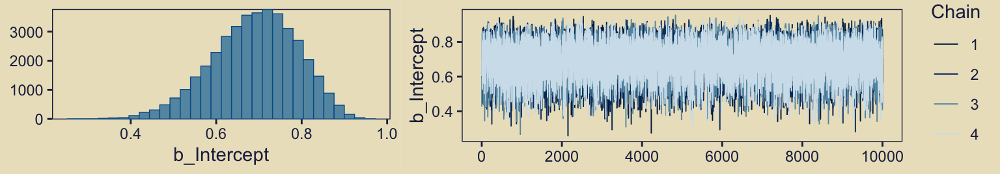
They look great. Now we glance at the model summary.
print(fit10.1) Family: bernoulli
Links: mu = identity
Formula: y ~ 1
Data: trial_data (Number of observations: 9)
Draws: 4 chains, each with iter = 11000; warmup = 1000; thin = 1;
total post-warmup draws = 40000
Regression Coefficients:
Estimate Est.Error l-95% CI u-95% CI Rhat Bulk_ESS Tail_ESS
Intercept 0.69 0.10 0.48 0.87 1.00 13966 17628
Draws were sampled using sampling(NUTS). For each parameter, Bulk_ESS
and Tail_ESS are effective sample size measures, and Rhat is the potential
scale reduction factor on split chains (at convergence, Rhat = 1).Next we’ll follow Kruschke and extract the posterior draws, saving them as a data frame called draws.
draws <- as_draws_df(fit10.1)
head(draws)# A draws_df: 6 iterations, 1 chains, and 4 variables
b_Intercept Intercept lprior lp__
1 0.59 0.59 0.57 -6.7
2 0.62 0.62 0.73 -6.5
3 0.60 0.60 0.61 -6.6
4 0.64 0.64 0.84 -6.4
5 0.85 0.85 0.80 -7.9
6 0.80 0.80 1.04 -7.0
# ... hidden reserved variables {'.chain', '.iteration', '.draw'}The fixef() function will return the posterior summaries for the model intercept (i.e., \(\theta\)).
fixef(fit10.1) Estimate Est.Error Q2.5 Q97.5
Intercept 0.6904526 0.0993256 0.4811821 0.8650163We can then index and save the desired summaries like so. Note how we’re adding a _1 suffix to the objects, which will help us differentiate between models a little later.
mean_theta_1 <- fixef(fit10.1)[1]
sd_theta_1 <- fixef(fit10.1)[2]Now we’ll convert the mean and standard-deviation summaries to the \(\alpha\) and \(\beta\) parameters, a_post_1 and b_post_1, respectively.
a_post_1 <- mean_theta_1 * (mean_theta_1 * (1 - mean_theta_1) / sd_theta_1^2 - 1)
b_post_1 <- (1 - mean_theta_1) * (mean_theta_1 * (1 - mean_theta_1) / sd_theta_1^2 - 1)Recall we’ve already defined several values.
n <- 9
z <- 6
omega <- 0.75
kappa <- 12The reason we’re saving all these values is we’re aiming to compute \(p(D)\), the probability of the data (i.e., the marginal likelihood), given the model. But our intermediary step will be computing its reciprocal, \(\frac{1}{p(D)}\). Here we’ll convert Kruschke’s code from the bottom of page 278 to a data-frame based workflow.
draws |>
transmute(theta = b_Intercept) |>
mutate(h_theta = dbeta(x = theta,
shape1 = a_post_1,
shape2 = b_post_1),
likelihood = dbern(x = theta, z = z, n = n),
prior = dbeta(x = theta,
shape1 = omega * (kappa - 2) + 1,
shape2 = (1 - omega) * (kappa - 2) + 1)) |>
summarise(one_over_pd = mean(h_theta / (likelihood * prior)),
p_d = 1 / one_over_pd)# A tibble: 1 × 2
one_over_pd p_d
<dbl> <dbl>
1 428. 0.00234Note how our definition for one_over_pd within summarise() is based on Equation 10.8 from the text (p. 275). We did not cover that equation or the surrounding material in this ebook because, well, we will not be using this method again, and I generally don’t care for Bayes factors. But anyway, our value for p_d matches up nicely with the value Kruschke reported at the top of page 278. Success!
Let’s rinse, wash, and repeat for \(\omega = 0.25\). First, we’ll need to redefine omega and our stanvars.
omega <- 0.25
stanvars <- stanvar(omega * (kappa - 2) + 1, name = "my_alpha") +
stanvar((1 - omega) * (kappa - 2) + 1, name = "my_beta")Fit the model.
fit10.2 <- brm(
data = trial_data,
family = bernoulli(link = identity),
y ~ 1,
prior(beta(my_alpha, my_beta), class = Intercept, lb = 0, ub = 1),
iter = 11000, warmup = 1000, chains = 4, cores = 4,
seed = 10,
stanvars = stanvars,
file = "fits/fit10.02")This time we’ll compute p_d for both models, and save the summary results as p_d_omegas.
# Extract new summary values
mean_theta_2 <- fixef(fit10.2)[1]
sd_theta_2 <- fixef(fit10.2)[2]
a_post_2 <- mean_theta_2 * (mean_theta_2 * (1 - mean_theta_2) / sd_theta_2^2 - 1)
b_post_2 <- (1 - mean_theta_2) * (mean_theta_2 * (1 - mean_theta_2) / sd_theta_2^2 - 1)
# Compute the results for both models at once
p_d_omegas <- bind_rows(as_draws_df(fit10.1), as_draws_df(fit10.2)) |>
transmute(omega = rep(c(0.75, 0.25), each = n() / 2),
theta = b_Intercept) |>
mutate(a_post = ifelse(omega == 0.75, a_post_1, a_post_2),
b_post = ifelse(omega == 0.75, b_post_1, b_post_2)) |>
mutate(h_theta = dbeta(x = theta,
shape1 = a_post,
shape2 = b_post),
likelihood = dbern(x = theta, z = z, n = n),
prior = dbeta(x = theta,
shape1 = omega * (kappa - 2) + 1,
shape2 = (1 - omega) * (kappa - 2) + 1)) |>
group_by(omega) |>
summarise(p_d = 1 / mean(h_theta / (likelihood * prior)))
p_d_omegas# A tibble: 2 × 2
omega p_d
<dbl> <dbl>
1 0.25 0.000499
2 0.75 0.00234 With our p_d_omegas object, we can use the p_d values to compute Bayes factors. Here’s \(\textit{BF}_{\omega_{0.75} / \omega_{0.25}}\).
p_d_omegas |>
summarise(bf = p_d[omega == 0.75] / p_d[omega == 0.25])# A tibble: 1 × 1
bf
<dbl>
1 4.68Here’s \(\textit{BF}_{\omega_{0.25} / \omega_{0.75}}\).
p_d_omegas |>
summarise(bf = p_d[omega == 0.25] / p_d[omega == 0.75])# A tibble: 1 × 1
bf
<dbl>
1 0.214Happily, these \(\textit{BF}\) values are very similar to the ones we computed in earlier sections.
10.3.2 Hierarchical MCMC computation of relative model probability is not available in brms: We’ll cover information criteria instead
I’m not aware of a way to specify a model “in which the top-level parameter is the index across models” in brms (p. 278). If you know of a way, share your code.
However, we do have options. We can compare and weight models using information criteria, about which you can learn more here or here. The LOO and WAIC are two primary information criteria available for brms. You can compute them for a given model with the loo() and waic() functions, respectively. Here’s a quick example of how to use the waic() function.
waic(fit10.1)
Computed from 40000 by 9 log-likelihood matrix.
Estimate SE
elpd_waic -6.2 1.3
p_waic 0.5 0.1
waic 12.5 2.7We’ll explain that output in a bit. Before we do, you should know the current recommended workflow for information criteria with brms models is to use the add_criterion() function, which will allow us to compute information-criterion-related output and save it to our brms fit objects. Here’s how to do that with both our fits.
fit10.1 <- add_criterion(fit10.1, criterion = c("loo", "waic"))
fit10.2 <- add_criterion(fit10.2, criterion = c("loo", "waic"))You can extract the same WAIC output for fit10.1 we saw above by executing fit10.1$criteria$waic. Here we look at the LOO summary for fit10.2, instead.
fit10.2$criteria$loo
Computed from 40000 by 9 log-likelihood matrix.
Estimate SE
elpd_loo -7.1 0.3
p_loo 0.5 0.0
looic 14.1 0.6
------
MCSE of elpd_loo is 0.0.
MCSE and ESS estimates assume MCMC draws (r_eff in [0.3, 0.3]).
All Pareto k estimates are good (k < 0.7).
See help('pareto-k-diagnostic') for details.You get a wealth of output, more of which can be seen by executing str(fit10.1$criteria$loo). First, notice the message “All Pareto k estimates are good (k < 0.5).” Pareto \(k\) values can be used for diagnostics (Vehtari & Gabry, 2022a, Plotting Pareto \(k\) diagnostics). Each case in the data gets its own \(k\) value and we like it when those \(k\)’s are low. The makers of the loo package (Vehtari et al., 2017; Vehtari et al., 2022) get worried when \(k\) values exceed 0.7 and, as a result, we will get warning messages when they do. Happily, we have no such warning messages in this example.
In the main section, we get estimates for the expected log predictive density (elpd_loo), the estimated effective number of parameters (p_loo), and the Pareto smoothed importance-sampling leave-one-out cross-validation (PSIS-LOO; looic). Each estimate comes with a standard error (i.e., SE). Like other information criteria, the LOO values aren’t of interest in and of themselves. However, the estimate of one model’s LOO relative to that of another can be of great interest. We generally prefer models with lower information criteria. With the loo_compare() function, we can compute a formal difference score between two models.
loo_compare(fit10.1, fit10.2, criterion = "loo") elpd_diff se_diff
fit10.1 0.0 0.0
fit10.2 -0.8 1.7 The loo_compare() output rank orders the models such that the best fitting model appears on top. All models receive a difference score relative to the best model. Here the best fitting model is fit10.1 and since the LOO for fit10.1 minus itself is zero, the values in the top row are all zero.
Each difference score also comes with a standard error. In this case, even though fit10.1 has the lower estimates, the standard error is twice the magnitude of the difference score. So the LOO difference score puts the two models on similar footing. You can do a similar analysis with the WAIC estimates.
In addition to difference-score comparisons, you can also use the LOO or WAIC for AIC-type model weighting. In brms, you do this with the model_weights() function.
(mw <- model_weights(fit10.1, fit10.2)) fit10.1 fit10.2
0.8298016 0.1701984 I don’t know that I’d call these weights probabilities, but they do sum to one. In this case, the analysis suggests we put about five times more weight to fit10.1 relative to fit10.2.
mw[1] / mw[2] fit10.1
4.875495 With brms::model_weights(), we have a variety of weighting schemes available to us. Since we didn’t specify any in the weights argument, we used the default "stacking"method, which is described in Yao et al. (2018). Vehtari has written about the paper on Gelman’s blog, too. But anyway, the point is that different weighting schemes might not produce the same results. For example, here’s the result from weighting using the WAIC.
model_weights(fit10.1, fit10.2, weights = "waic") fit10.1 fit10.2
0.6954598 0.3045402 The results are similar, for sure. But they’re not the same. The stacking method via the brms default weights = "stacking" is the current preferred method by the folks on the Stan team (e.g., the authors of the above linked paper).
For more on stacking and other weighting schemes, see Vehtari and Gabry’s (2022b) vignette, Bayesian Stacking and Pseudo-BMA weights using the loo package, or Vehtari’s modelselection_tutorial GitHub repository. But don’t worry. We will have more opportunities to practice with information criteria, model weights, and such later in this ebook.
10.3.2.1 Using [No need to use] pseudo-priors to reduce autocorrelation
Since we didn’t use Kruschke’s method from the last subsection, we don’t have the same worry about autocorrelation. For example, here are the autocorrelation plots for fit10.1.
color_scheme_set(
scheme = c(lisa_palette("KatsushikaHokusai", n = 9, type = "continuous")[6:1])
)
draws |>
mutate(chain = .chain) |>
mcmc_acf(pars = "b_Intercept",
lags = 35)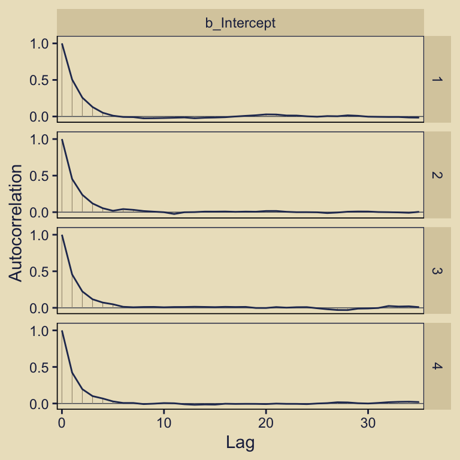
Our autocorrelations were a little high for HMC, but nowhere near pathological. The results for fit10.2 were similar. Before we move on, note our use of bayesplot::color_scheme_set(), which allowed us to customize the color scheme bayesplot used within the plot. Based on that code, here is our new color scheme for all plots made by bayesplot.
color_scheme_view()color_scheme_get() custom
1 #A3977F
2 #6E6352
3 #4D5362
4 #2D4472
5 #26365F
6 #1F284CIn case you were curious, here is the default.
color_scheme_view(scheme = "blue")Anyway, as you might imagine from the moderate autocorrelations, the \(N_\textit{eff}/N\) ratio for b_Intercept wasn’t great.
neff_ratio(fit10.1)[1] |>
mcmc_neff() +
yaxis_text(hjust = 0)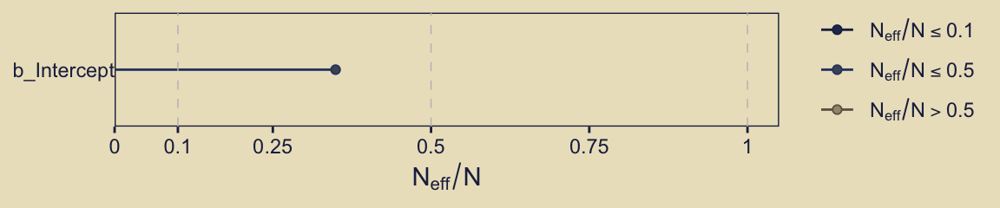
But we specified a lot of post-warmup draws, so we’re still in good shape. Plus, the \(\widehat R\) was fine.
brms::rhat(fit10.1)[1]b_Intercept
1.00012 10.3.3 Models with different “noise” distributions in JAGS brms
Probability distribution[s are] sometimes [called “noise”] distribution[s] because [they describe] the random variability of the data values around the underlying trend. In more general applications, different models can have different noise distributions. For example, one model might describe the data as log-normal distributed, while another model might describe the data as gamma distributed. (p. 288)
If there are more than one plausible noise distributions for our data, we might want to compare the models. Kruschke then gave us a general trick in the form of this JAGS code:
data {
C <- 10000 # JAGS does not warn if too small!
for (i in 1:N) {
ones[i] <- 1 }
} model {
for (i in 1:N) {
spy1[i] <- pdf1(y[i], parameters1) / C # where pdf1 is a formula
spy2[i] <- pdf2(y[i], parameters2) / C # where pdf2 is a formula
spy[i] <- equals(m,1) * spy1[i] + equals(m, 2) * spy2[i]
ones[i] ~ dbern(spy[i])
}
parameters1 ~ dprior1...
parameters2 ~ dprior2...
m ~ dcat(mPriorProb[])
mPriorProb[1] <- .5
mPriorProb[2] <- .5
}I’m not aware that we can do this within the Stan/brms framework. If I’m in error and you know how, please share your code. However, we do have options. In anticipation of Chapter 16, let’s consider Gaussian-like data with thick tails. We might generate some like this.
# How many draws would you like?
n <- 1e3
set.seed(10)
d <- tibble(y = rt(n, df = 7))
glimpse(d)Rows: 1,000
Columns: 1
$ y <dbl> 0.02138566, -0.98699021, 0.64648062, -0.23690015, 0.97691839, -0.20024241, 0.78065787, -1.09303336, 1.82663906, -0.681…The resulting data look like this.
d |>
ggplot(aes(x = y)) +
geom_histogram(bins = 30, color = kh[9], fill = kh[3],
linewidth = 0.1) +
scale_y_continuous(NULL, breaks = NULL,
expand = expansion(mult = c(0, 0.05))) +
theme(panel.grid = element_blank())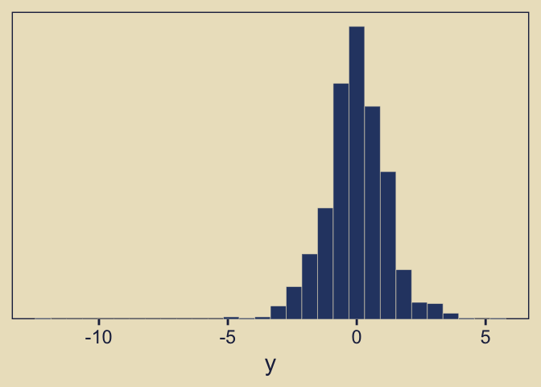
As you’d expect with a small-\(\nu\) Student’s \(t\), some of our values are far from the central clump. If you don’t recall, Student’s \(t\)-distribution has three parameters: \(\nu\), \(\mu\), and \(\sigma\). The Gaussian is a special case of Student’s \(t\) where \(\nu = \infty\). As \(\nu\) gets small, the distribution allocates more mass in the tails. From a Gaussian perspective, the small-\(\nu\) Student’s \(t\) expects more outliers–though it’s a little odd calling them outliers from a small-\(\nu\) Student’s \(t\) perspective.
Let’s see how well the Gaussian versus the Student’s \(t\) likelihoods handle the data. Here we’ll use fairly liberal priors.
fit10.3 <- brm(
data = d,
family = gaussian,
y ~ 1,
prior = c(prior(normal(0, 5), class = Intercept),
# By default, this has a lower bound of 0
prior(normal(0, 5), class = sigma)),
chains = 4, cores = 4,
seed = 10,
file = "fits/fit10.03")
fit10.4 <- brm(
data = d,
family = student,
y ~ 1,
prior = c(prior(normal(0, 5), class = Intercept),
prior(normal(0, 5), class = sigma),
# This is the brms default prior for nu
prior(gamma(2, 0.1), class = nu)),
chains = 4, cores = 4,
seed = 10,
file = "fits/fit10.04")In case you were curious, here’s what that default gamma(2, 0.1) prior on nu looks like.
tibble(x = 1:100) |>
mutate(density = dgamma(x, shape = 2, rate = 0.1)) |>
ggplot(aes(x = x, y = density)) +
geom_area(fill = kh[5]) +
scale_y_continuous(NULL, breaks = NULL,
expand = expansion(mult = c(0, 0.05))) +
scale_x_continuous(expression(italic(p)(nu)), expand = expansion(mult = c(0, 0.01)), limits = c(0, 100))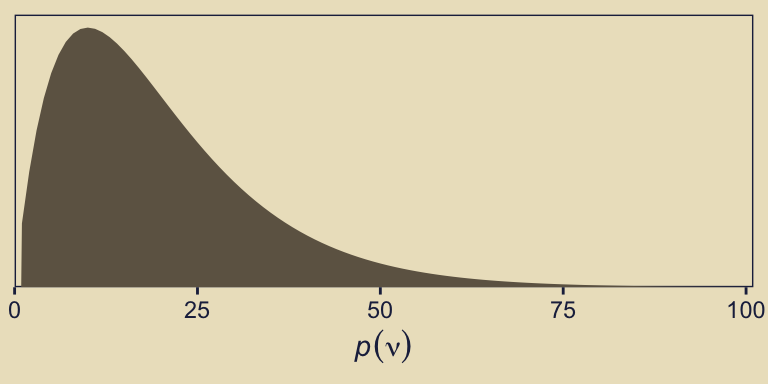
That prior puts most of the probability mass below 50, but the right tail gently fades off into the triple digits, allowing for the possibility of larger estimates.
We can use the posterior_summary() function to get a compact look at the parameter summaries.
posterior_summary(fit10.3)[1:2, ] |> round(digits = 2) Estimate Est.Error Q2.5 Q97.5
b_Intercept -0.03 0.04 -0.11 0.05
sigma 1.25 0.03 1.20 1.31posterior_summary(fit10.4)[1:3, ] |> round(digits = 2) Estimate Est.Error Q2.5 Q97.5
b_Intercept -0.01 0.04 -0.08 0.06
sigma 0.98 0.04 0.90 1.05
nu 5.72 1.03 4.06 8.15Now we can compare the two approaches using information criteria. For kicks, we’ll use the WAIC.
fit10.3 <- add_criterion(fit10.3, criterion = c("loo", "waic"))
fit10.4 <- add_criterion(fit10.4, criterion = c("loo", "waic"))
loo_compare(fit10.3, fit10.4, criterion = "waic") elpd_diff se_diff
fit10.4 0.0 0.0
fit10.3 -60.5 40.2 Based on the WAIC difference, we have some support for preferring the Student’s \(t\), but do notice how wide that SE was. We can also compare the models using model weights. Here we’ll use the default weighting scheme.
model_weights(fit10.3, fit10.4)Warning: Some Pareto k diagnostic values are too high. See help('pareto-k-diagnostic') for details. fit10.3 fit10.4
0.03707081 0.96292919 Virtually all of the stacking weight was placed on the Student’s-\(t\) model, fit10.4.
Remember what that \(p(\nu)\) looked like? Here’s our posterior distribution for \(\nu\).
as_draws_df(fit10.4) |>
ggplot(aes(x = nu)) +
geom_histogram(bins = 30, color = kh[9], fill = kh[3],
linewidth = 0.1) +
scale_x_continuous(expression(italic(p)(nu*"|"*italic(D))),
expand = c(0, 0)) +
scale_y_continuous(NULL, breaks = NULL,
expand = expansion(mult = c(0, 0.05))) +
coord_cartesian(xlim = c(0, 21)) +
labs(subtitle = expression("Recall that for the Gaussian, "*nu==infinity.))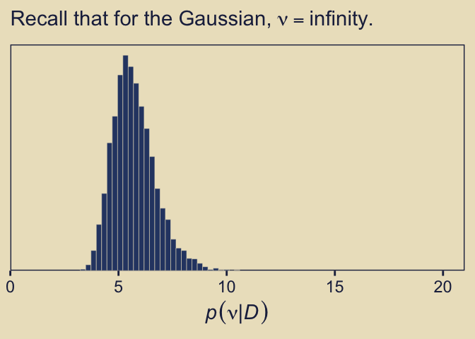
Even though our prior for \(\nu\) was relatively weak, the posterior ended up concentrated on values in the middle-single-digit range. Recall the data-generating value was 7.
We can also compare the models using posterior-predictive checks. There are a variety of ways we might do this, but the most convenient way is with brms::pp_check(), which is itself a wrapper for the family of ppc functions from the bayesplot package.
pp_check(fit10.3, ndraws = 50) +
coord_cartesian(xlim = c(-10, 10)) +
ggtitle("Gaussian model")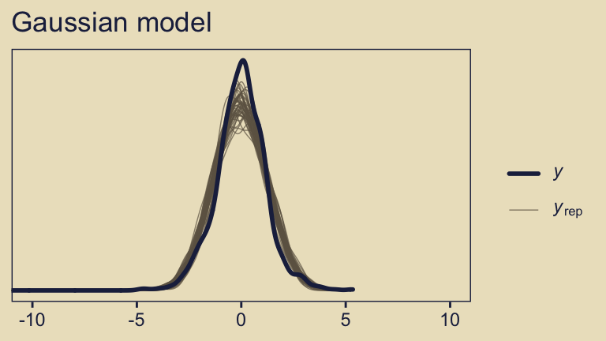
pp_check(fit10.4, ndraws = 50) +
coord_cartesian(xlim = c(-10, 10)) +
ggtitle("Student-t model")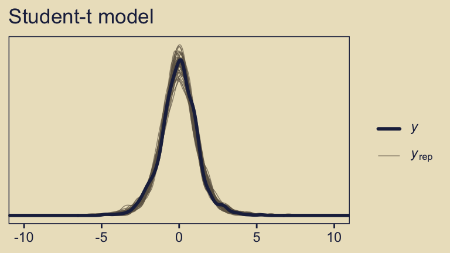
The default pp_check() setting allows us to compare the density of the data \(y\) (i.e., the dark blue) with 10 densities simulated from the posterior \(y_\text{rep}\) (i.e., the light blue). By ndraws = 50, we adjusted that default to 50 simulated densities. We prefer models that produce \(y_\text{rep}\) distributions resembling \(y\). Though the results from both models were similar, the simulated distributions from fit10.4 mimicked the original data a little more convincingly. To learn more about this approach to posterior predictive checks, check out Gabry’s (2022) vignette, Graphical posterior predictive checks using the bayesplot package.
10.4 Prediction: Model averaging
In many applications of model comparison, the analyst wants to identify the best model and then base predictions of future data on that single best model, denoted with index \(b\). In this case, predictions of future \(\hat y\) are based exclusively on the likelihood function \(p_b(\hat y \mid \theta_b, m = b)\) and the posterior distribution \(p_b(\theta_b \mid D, m = b)\) of the winning model:
\[p(\hat y \mid D, m = b) = \int \text d \theta_b \; p_b (\hat y \mid \theta_b, m = b) p_b(\theta_b \mid D, m = b)\]
But the full model of the data is actually the complete hierarchical structure that spans all the models being compared, as indicated in Figure 10.1 (p. 267). Therefore, if the hierarchical structure really expresses our prior beliefs, then the most complete prediction of future data takes into account all the models, weighted by their posterior credibilities. In other words, we take a weighted average across the models, with the weights being the posterior probabilities of the models. Instead of conditionalizing on the winning model, we have
\[\begin{align*} p (\hat y \mid D) & = \sum_m p(\hat y \mid D, m)\ p(m \mid D) \\ & = \sum_m \int \text d \theta_m \; p_m(\hat y \mid \theta_m, m)\ p_m(\theta_m \mid D, m)\ p(m \mid D) \end{align*}\]
This is called model averaging. (p. 289)
Okay, while the concept of model averaging is of great interest, we aren’t going to be able to follow this approach to it within the Stan/brms paradigm. This, recall, is because our paradigm doesn’t allow for a hierarchical organization of models in the same way JAGS does. However, we can still play the model averaging game with extensions of our model weighting paradigm, above. Before we get into the details,
recall that there were two models of mints that created the coin, with one mint being tail-biased with mode \(\omega = 0.25\) and one mint being head-biased with mode \(\omega = 0.75\) The two subpanels in the lower-right [of Figure 10.3] illustrate the posterior distributions on \(\omega\) within each model, \(p(\theta \mid D, \omega = 0.25)\) and \(p(\theta \mid D, \omega = 0.75)\) The winning model was \(\omega = 0.75\), and therefore the predicted value of future data, based on the winning model alone, would use \(p(\theta \mid D, \omega = 0.75)\). (p. 289)
Here’s the histogram for \(p(\theta \mid D, \omega = 0.75)\), which we generate from our fit10.1.
as_draws_df(fit10.1) |>
ggplot(aes(x = b_Intercept, y = 0)) +
stat_histinterval(point_interval = mode_hdi, .width = c(0.95, 0.5),
breaks = 40, color = kh[2], fill = kh[6],
slab_color = kh[5], slab_size = 0.25, outline_bars = TRUE) +
scale_x_continuous(expression(italic(p)(theta*"|"*italic(D)*", "*omega==.75)),
breaks = 0:5 / 5, expand = c(0, 0), limits = 0:1) +
scale_y_continuous(NULL, breaks = NULL,
expand = expansion(mult = c(0.02, 0.05))) +
labs(subtitle = "The posterior for the probability, given fit10.1") 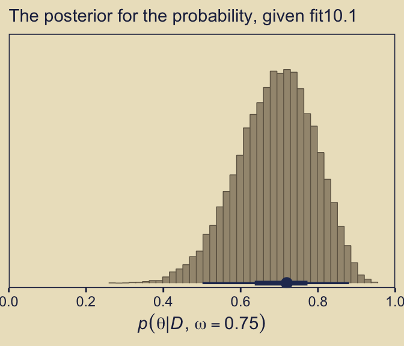
But the overall model included \(\omega = 0.75\), and if we use the overall model, then the predicted value of future data should be based on the complete posterior summed across values of \(\omega\). The complete posterior distribution [is] \(p(\theta \mid D)\) (p. 289).
The cool thing about the model weighting stuff we learned about earlier is that you can use those model weights to average across models. Again, we’re not weighting the models by posterior probabilities the way Kruschke discussed in text, but the spirit is similar. We can use the brms::pp_average() function to make posterior predictive prediction with mixtures of the models, weighted by our chosen weighting scheme. Here, we’ll go with the default stacking weights.
nd <- tibble(y = 1)
pp_a <- pp_average(
fit10.1, fit10.2,
newdata = nd,
# This line is not necessary,
# but you should see how to choose weighing methods
weights = "stacking",
method = "fitted",
summary = FALSE) |>
as_tibble() |>
set_names("theta")
# What does this produce?
head(pp_a) # A tibble: 6 × 1
theta
<dbl>
1 0.590
2 0.597
3 0.638
4 0.849
5 0.805
6 0.799We can plot our model-averaged \(\theta\) with a little help from good old tidybayes::stat_histinterval().
pp_a |>
ggplot(aes(x = theta, y = 0)) +
stat_histinterval(point_interval = mode_hdi, .width = c(0.95, 0.5),
breaks = 40, color = kh[2], fill = kh[6],
slab_color = kh[5], slab_size = 0.25, outline_bars = TRUE) +
scale_x_continuous(expression(italic(p)(theta*"|"*italic(D))),
breaks = 0:5 / 5, expand = c(0, 0), limits = 0:1) +
scale_y_continuous(NULL, breaks = NULL,
expand = expansion(mult = c(0.02, 0.05))) +
labs(subtitle = "The posterior for the probability, given the\nweighted combination of fit10.1 and fit10.2")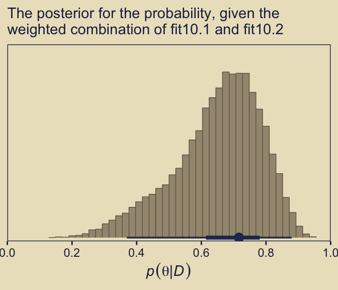
As Kruschke concluded, “you can see the contribution of \(p(\theta \mid D, \omega = 0.25)\) as the extended leftward tail” (p. 289). Interestingly enough, that looks a lot like the marginal density of \(p (\theta \mid D)\) across values of \(\omega\) we made with grid approximation in Figure 10.3, doesn’t it?
10.5 Model complexity naturally accounted for
A complex model (usually) has an inherent advantage over a simpler model because the complex model can find some combination of its parameter values that match the data better than the simpler model. There are so many more parameter options in the complex model that one of those options is likely to fit the data better than any of the fewer options in the simpler model. The problem is that data are contaminated by random noise, and we do not want to always choose the more complex model merely because it can better fit noise. Without some way of accounting for model complexity, the presence of noise in data will tend to favor the complex model.
Bayesian model comparison compensates for model complexity by the fact that each model must have a prior distribution over its parameters, and more complex models must dilute their prior distributions over larger parameter spaces than simpler models. Thus, even if a complex model has some particular combination of parameter values that fit the data well, the prior probability of that particular combination must be small because the prior is spread thinly over the broad parameter space. (pp. 289–290)
Now our two models are:
- the “must-be-fair” model \(p(\theta \mid D, \kappa = 1{,}000)\), and
- the “anything’s-possible” model \(p(\theta \mid D, \kappa = 2)\).
They look like this.
# How granular to you want the theta sequence?
n <- 1e3
# Simulate the data
tibble(omega = 0.5,
kappa = c(1000, 2),
model = c("The must-be-fair model", "The anything's-possible model")) |>
expand_grid(theta = seq(from = 0, to = 1, length.out = n)) |>
mutate(density = dbeta(theta,
shape1 = omega * (kappa - 2) + 1,
shape2 = (1 - omega) * (kappa - 2) + 1)) |>
# Plot
ggplot(aes(x = theta, y = density)) +
geom_area(fill = kh[5]) +
scale_x_continuous(expression(theta), breaks = 0:5 / 5, expand = c(0, 0),
labels = c(0, 1:4 / 5, 1), limits = 0:1) +
scale_y_continuous(NULL, breaks = NULL,
expand = expansion(mult = c(0, 0.05))) +
labs(subtitle = "Note that in this case, their y-axes are on the same scale.") +
facet_wrap(~ model)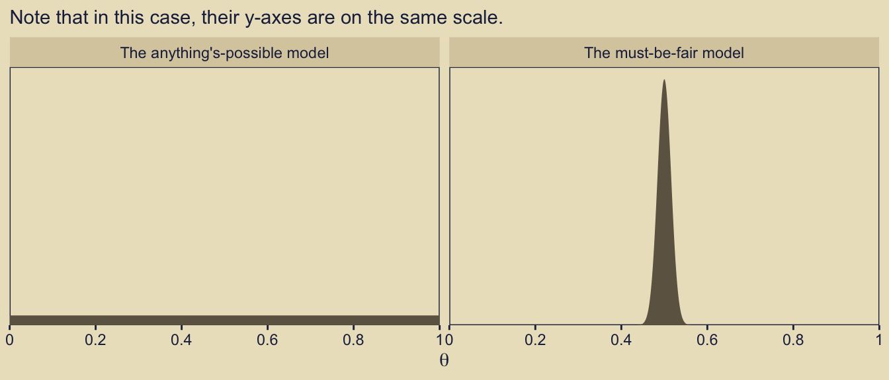
Here’s how you might compute the \(\alpha\) and \(\beta\) values for the corresponding beta distributions.
tibble(omega = 0.5,
kappa = c(1000, 2),
model = c("The must-be-fair model", "The anything's-possible model")) |>
mutate(alpha = omega * (kappa - 2) + 1,
beta = (1 - omega) * (kappa - 2) + 1)# A tibble: 2 × 5
omega kappa model alpha beta
<dbl> <dbl> <chr> <dbl> <dbl>
1 0.5 1000 The must-be-fair model 500 500
2 0.5 2 The anything's-possible model 1 1With those in hand, we can use our p_d() function to compute the Bayes factor based on flipping a coin \(N = 20\) times and observing \(z = 15\) heads.
# The data summaries
z <- 15
n <- 20
p_d(z = z, n = n, a = 500, b = 500) / p_d(z = z, n = n, a = 1, b = 1)[1] 0.3229023Let’s try again, this time supposing we observe \(z = 15\) heads out of \(N = 20\) coin flips.
z <- 11
p_d(z = z, n = n, a = 500, b = 500) / p_d(z = z, n = n, a = 1, b = 1)[1] 3.337148The anything’s-possible model loses because it pays the price of having a small prior probability on the values of \(\theta\) near the data proportion, while the must-be-fair model has large prior probability on \(\theta\) values sufficiently near the data proportion to be credible. Thus, in Bayesian model comparison, a simpler model can win if the data are consistent with it, even if the complex model fits just as well. The complex model pays the price of having small prior probability on parameter values that describe simple data. (p. 291)
10.5.1 Caveats regarding nested model comparison
A frequently encountered special case of comparing models of different complexity occurs when one model is “nested” within the other. Consider a model that implements all the meaningful parameters we can contemplate for the particular application. We call that the full model. We might consider various restrictions of those parameters, such as setting some of them to zero, or forcing some to be equal to each other. A model with such a restriction is said to be nested within the full model. (p. 291)
Kruschke didn’t walk out the examples in this section. But for the sake of practice, let’s work through the first one. “Recall the hierarchical model of baseball batting abilities” from Section 9.5.1 (p. 291). Let’s reload those data.
my_data <- read_csv("data.R/BattingAverage.csv")
glimpse(my_data)Rows: 948
Columns: 6
$ Player <chr> "Fernando Abad", "Bobby Abreu", "Tony Abreu", "Dustin Ackley", "Matt Adams", "Nathan Adcock", "Jeremy Affel…
$ PriPos <chr> "Pitcher", "Left Field", "2nd Base", "2nd Base", "1st Base", "Pitcher", "Pitcher", "1st Base", "1st Base", …
$ Hits <dbl> 1, 53, 18, 137, 21, 0, 0, 2, 150, 167, 0, 128, 66, 3, 1, 81, 180, 36, 150, 0, 81, 86, 0, 9, 21, 89, 1, 128,…
$ AtBats <dbl> 7, 219, 70, 607, 86, 1, 1, 20, 549, 576, 1, 525, 275, 12, 8, 384, 629, 158, 520, 3, 347, 319, 3, 63, 94, 36…
$ PlayerNumber <dbl> 1, 2, 3, 4, 5, 6, 7, 8, 9, 10, 11, 12, 13, 14, 15, 16, 17, 18, 19, 20, 21, 22, 23, 24, 25, 26, 27, 28, 29, …
$ PriPosNumber <dbl> 1, 7, 4, 4, 3, 1, 1, 3, 3, 4, 1, 5, 4, 2, 7, 4, 6, 8, 9, 1, 2, 5, 1, 1, 7, 2, 1, 6, 1, 6, 1, 1, 9, 2, 1, 2,…“The full model has a distinct modal batting ability, \(\omega_c\) , for each of the nine fielding positions. The full model also has distinct concentration parameters for each of the nine positions” (p. 291). Let’s fit that model again.
fit9.2 <- brm(
data = my_data,
family = binomial(link = logit),
Hits | trials(AtBats) ~ 1 + (1 | PriPos) + (1 | PriPos:Player),
prior = c(prior(normal(0, 1.5), class = Intercept),
prior(normal(0, 1), class = sd)),
iter = 3500, warmup = 500, chains = 3, cores = 3,
control = list(adapt_delta = 0.99),
seed = 9,
file = "fits/fit09.02")Next we’ll consider a restricted version of fit9.2 “in which all infielders (first base, second base, etc.) are grouped together versus all outfielders (right field, center field, and left field). In this restricted model, we are forcing the modal batting abilities of all the outfielders to be the same, that is, \(\omega_\text{left field} = \omega_\text{center field} = \omega_\text{right field}\)” (p. 291). To fit that model, we’ll need to make a new variable PriPos_small which is identical to its parent variable PriPos except that it collapses those three positions into our new category Outfield.
my_data <- my_data |>
mutate(PriPos_small = if_else(PriPos %in% c("Center Field", "Left Field", "Right Field"),
"Outfield", PriPos))Now use update() to fit the restricted model.
fit10.5 <- update(
fit9.2,
newdata = my_data,
formula = Hits | trials(AtBats) ~ 1 + (1 | PriPos_small) + (1 | PriPos_small:Player),
iter = 3500, warmup = 500, chains = 3, cores = 3,
control = list(adapt_delta = 0.99),
seed = 10,
file = "fits/fit10.05")Unlike with what Kruschke alluded to in the prose, here we’ll compare the two models with the WAIC.
fit9.2 <- add_criterion(fit9.2, criterion = "waic")
fit10.5 <- add_criterion(fit10.5, criterion = "waic")
loo_compare(fit9.2, fit10.5, criterion = "waic") elpd_diff se_diff
fit10.5 0.0 0.0
fit9.2 -0.1 1.1 Based on the WAIC difference score, they’re near equivalent. Now let’s see how their WAIC weights shake out.
model_weights(fit9.2, fit10.5, weights = "waic") |> round(digits = 2) fit9.2 fit10.5
0.49 0.51 In this case, just a little more of the weight went to the full model, fit9.2. The overall pattern between the WAIC difference and the WAIC weights was uncertainty. Make sure to use good substantive reasoning when comparing models.
10.6 Extreme sensitivity to prior distribution
In many realistic applications of Bayesian model comparison, the theoretical emphasis is on the difference between the models’ likelihood functions. For example, one theory predicts planetary motions based on elliptical orbits around the sun, and another theory predicts planetary motions based on circular cycles and epicycles around the earth. The two models involve very different parameters. In these sorts of models, the form of the prior distribution on the parameters is not a focus, and is often an afterthought. But, when doing Bayesian model comparison, the form of the prior is crucial because the Bayes factor integrates the likelihood function weighted by the prior distribution. (p. 292)
However, “the sensitivity of Bayes factors to prior distributions is well known in the literature (e.g., Kass & Raftery, 1995; Liu & Aitkin, 2008; Vanpaemel, 2010),” and furthermore, when comparing Bayesian models using the methods Kruschke outlined in this chapter of the text, “different forms of vague priors can yield very different Bayes factors” (p. 293).
In the two \(\textit{BF}\)’s to follow, we compare the must-be-fair model and the anything’s-possible models from Section 10.5 to new data: \(z = 65, N = 100\).
z <- 65; n <- 100
p_d(z = z, n = n, a = 500, b = 500) / p_d(z = z, n = n, a = 1, b = 1)[1] 0.125287The resulting 0.13 favored the anything’s-possible model.
Another way to express the anything’s-possible model is with the Haldane prior, which sets the two parameters within the beta distribution to be a) equivalent and b) quite small (i.e., 0.01 in this case).
p_d(z = z, n = n, a = 500, b = 500) / p_d(z = z, n = n, a = 0.01, b = 0.01)[1] 5.728066Now we flipped to favoring the must-be-fair model. You might be asking, Wait, kind of distribution did that Haldane prior produce? Here we compare it to the \(\operatorname{Beta}(1, 1)\).
# Save this text for later
text <- c("Uninformative prior, Beta(1, 1)", "Haldane prior, Beta(0.01, 0.01)")
# How granular to you want the theta sequence?
length <- 1e3
# Simulate the data
tibble(alpha = c(1, 0.01),
beta = c(1, 0.01),
model = factor(text, levels = text)) |>
expand_grid(theta = seq(from = 0, to = 1, length.out = length)) |>
mutate(density = dbeta(theta, shape1 = alpha, shape2 = beta)) |>
# Plot
ggplot(aes(x = theta, y = density)) +
geom_area(fill = kh[3]) +
scale_x_continuous(expression(theta), breaks = 0:5 / 5, expand = c(0, 0),
labels = c(0, 1:4 / 5, 1), limits = 0:1) +
scale_y_continuous(NULL, breaks = NULL,
expand = expansion(mult = c(0, 0.05))) +
labs(title = "We have two anything’s-possible models!",
subtitle = "These y-axes are on the same scale.") +
facet_wrap(~ model)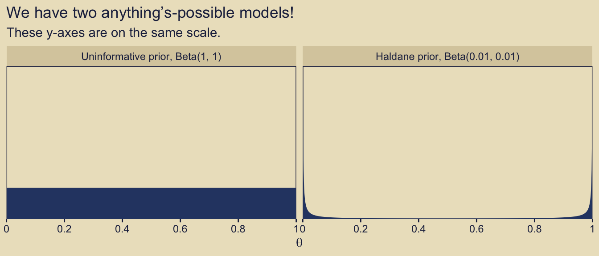
Before we can complete the analyses of this subsection, we’ll need to define our version of Kruschke’s HDIofICDF function(), hdi_of_icdf(). Like we’ve done in previous chapters, here we mildly reformat the function.
hdi_of_icdf <- function(name, width = 0.95, tol = 1e-8, ... ) {
incredible_mass <- 1.0 - width
interval_width <- function(low_tail_prob, name, width, ...) {
name(width + low_tail_prob, ...) - name(low_tail_prob, ...)
}
opt_info <- optimize(interval_width, c(0, incredible_mass),
name = name, width = width,
tol = tol, ...)
hdi_lower_tail_prob <- opt_info$minimum
c(ll = name(hdi_lower_tail_prob, ...),
ul = name(width + hdi_lower_tail_prob, ...))
}And here we’ll make a custom variant of hdi_of_qbeta() to be more useful within the context of the map2() function.
hdi_of_qbeta <- function(shape1, shape2) {
hdi_of_icdf(name = qbeta,
shape1 = shape1,
shape2 = shape2) |>
data.frame() |>
set_names("value") |>
mutate(level = c("ll", "ul")) |>
pivot_wider(names_from = level, values_from = value)
}Recall that when we combine a \(\operatorname{Beta}(\theta \mid \alpha, \beta)\) prior with the results of a Bernoulli likelihood, we get a posterior defined by \(\operatorname{Beta}(\theta \mid z + \alpha, N - z + \beta)\).
d <- tibble(model = c("Uniform", "Haldane"),
prior_a = c(1, 0.01),
prior_b = c(1, 0.01)) |>
mutate(posterior_a = z + prior_a,
posterior_b = n - z + prior_b)
d# A tibble: 2 × 5
model prior_a prior_b posterior_a posterior_b
<chr> <dbl> <dbl> <dbl> <dbl>
1 Uniform 1 1 66 36
2 Haldane 0.01 0.01 65.0 35.0Now we’ll use our custom hdi_of_qbeta() to compute the HDIs.
d <- d |>
mutate(levels = map2(posterior_a, posterior_b, hdi_of_qbeta)) |>
unnest(levels)
d# A tibble: 2 × 7
model prior_a prior_b posterior_a posterior_b ll ul
<chr> <dbl> <dbl> <dbl> <dbl> <dbl> <dbl>
1 Uniform 1 1 66 36 0.554 0.738
2 Haldane 0.01 0.01 65.0 35.0 0.556 0.742Let’s compare those HDIs in a plot.
d |>
ggplot(aes(x = ll, xend = ul,
y = model, yend = model)) +
geom_segment(color = kh[2], linewidth = 1) +
scale_x_continuous(expression(theta), breaks = 0:5 / 5, expand = c(0, 0),
labels = c(0, 1:4 / 5, 1), limits = 0:1) +
labs(y = NULL,
subtitle = "Those two HDIs are quite similar; it's\nremarkable their BFs are so different.") +
theme(axis.text.y = element_text(hjust = 0),
axis.ticks.y = element_blank())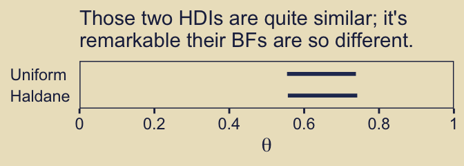
“The HDIs are virtually identical. In particular, for either prior, the posterior distribution rules out \(\theta = 0.5\), which is to say that the must-be-fair hypothesis is not among the credible values” (p. 294).
10.6.1 Priors of different models should be equally informed
“We have established that seemingly innocuous changes in the vagueness of a vague prior can dramatically change a model’s marginal likelihood, and hence its Bayes factor in comparison with other models. What can be done to ameliorate the problem” (p. 294)? Kruschke posed one method might be taking a small representative portion of the data in hand and use them to make an empirically-based prior for the remaining set of data. From our previous example, “suppose that the \(10\%\) subset has \(6\) heads in \(10\) flips, so the remaining \(90\%\) of the data has \(z = 65 − 6\) and \(N = 100 − 10\)” (p. 294).
Here are the new Bayes factors based on that method.
z <- 65 - 6
n <- 100 - 10
# Peaked vs Uniform
p_d(z = z, n = n, a = 500 + 6, b = 500 + 10 - 6) / p_d(z = z, n = n, a = 1 + 6, b = 1 + 10 - 6)[1] 0.05570509# Peaked vs Haldane
p_d(z = z, n = n, a = 500 + 6, b = 500 + 10 - 6) / p_d(z = z, n = n, a = 0.01 + 6, b = 0.01 + 10 - 6)[1] 0.05748123Now the two Bayes Factors are nearly the same.
It’s not in the text, but let’s compare these three models using brms, information criteria, model weights, model averaging, and posterior predictive checks. First, we’ll save the \(z\) and \(N\) information as a tibble with a series of 0’s and 1’s.
z <- 65; n <- 100
trial_data <- tibble(y = rep(0:1, times = c(n - z, z)))
glimpse(trial_data)Rows: 100
Columns: 1
$ y <int> 0, 0, 0, 0, 0, 0, 0, 0, 0, 0, 0, 0, 0, 0, 0, 0, 0, 0, 0, 0, 0, 0, 0, 0, 0, 0, 0, 0, 0, 0, 0, 0, 0, 0, 0, 1, 1, 1, 1, 1…Next, fit the three models with brms::brm().
fit10.6 <- brm(
data = trial_data,
family = bernoulli(link = identity),
y ~ 1,
prior(beta(500, 500), class = Intercept, lb = 0, ub = 1),
iter = 11000, warmup = 1000, chains = 4, cores = 4,
seed = 10,
file = "fits/fit10.06")
fit10.7 <- brm(
data = trial_data,
family = bernoulli(link = identity),
y ~ 1,
# Uniform
prior(beta(1, 1), class = Intercept, lb = 0, ub = 1),
iter = 11000, warmup = 1000, chains = 4, cores = 4,
seed = 10,
file = "fits/fit10.07")
fit10.8 <- brm(
data = trial_data,
family = bernoulli(link = identity),
y ~ 1,
# Haldane
prior(beta(0.01, 0.01), class = Intercept, lb = 0, ub = 1),
iter = 11000, warmup = 1000, chains = 4, cores = 4,
seed = 10,
file = "fits/fit10.08")Compare the models by the LOO.
fit10.6 <- add_criterion(fit10.6, criterion = "loo")
fit10.7 <- add_criterion(fit10.7, criterion = "loo")
fit10.8 <- add_criterion(fit10.8, criterion = "loo")
loo_compare(fit10.6, fit10.7, fit10.8) elpd_diff se_diff
fit10.7 0.0 0.0
fit10.8 0.0 0.1
fit10.6 -2.9 2.7 Based on the LOO comparisons, none of the three models was a clear favorite. Although both versions of the anything’s-possible model (i.e., fit10.7 and fit10.8) had lower numeric estimates than the must-be-fair model (i.e., fit10.6), the standard errors on the difference scores were the same magnitude as the difference estimates themselves. As for comparing the two variants of the anything’s-possible model directly, their LOO estimates were almost indistinguishable.
Now let’s see what happens when we compute their model weights. Here we’ll contrast the LOO weights with the stacking weights.
Time difference of 4.882878 secsmw <- model_weights(fit10.6, fit10.7, fit10.8, weights = "stacking")
mw |>
round(digits = 2)
model_weights(fit10.6, fit10.7, fit10.8, weights = "loo") |>
round(digits = 2)fit10.6 fit10.7 fit10.8
0.13 0.00 0.87 fit10.6 fit10.7 fit10.8
0.03 0.49 0.48 The evidence varied a bit by the specific weighting scheme. Across both, the model with the uniform prior (fit10.7) did arguably the best, but the model with the Haldane prior (fit10.8) was clearly in the running. Overall, the evidence for one versus another was weak.
Like we did earlier with fit10.1 and fit10.2, we can use the pp_average() function to compute the stacking weighted posterior for \(\theta\).
pp_average(fit10.6, fit10.7, fit10.8,
newdata = nd,
weights = mw,
method = "fitted",
summary = FALSE) |>
as_tibble() |>
ggplot(aes(x = V1, y = 0)) +
stat_histinterval(point_interval = mode_hdi, .width = c(0.95, 0.5),
breaks = 40, color = kh[2], fill = kh[6],
slab_color = kh[5], slab_size = 0.25, outline_bars = TRUE) +
scale_x_continuous(expression(italic(p)(theta*"|"*italic(D))), breaks = 0:5 / 5,
expand = c(0, 0), labels = c(0, 1:4 / 5, 1), limits = 0:1) +
scale_y_continuous(NULL, breaks = NULL,
expand = expansion(mult = c(0.01, 0.05))) +
labs(subtitle = "The posterior for the probability, given the weighted\ncombination of fit10.6, fit10.7, and fit10.8")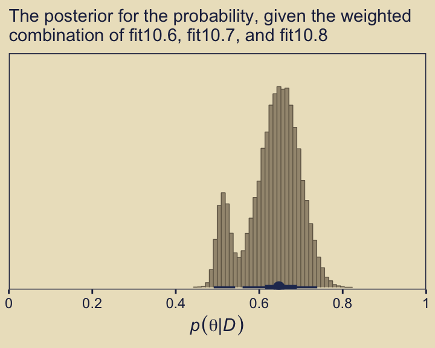
Did you notice the weights = mw argument, there? From the pp_average.brmsfit section of the brms reference manual (Bürkner, 2022, p. 177), we read “weights may also be be a numeric vector of pre-specified weights.” Since we saved the results of model_weights() as an object mw, we were able to capitalize on that feature. If you leave out that argument, you’ll have to wait a bit for brms to compute those weights again from scratch.
Just for the sake of practice, we can also compare the models with separate posterior predictive checks using pp_check().
p1 <- pp_check(fit10.6, type = "bars", ndraws = 1e3) +
ggtitle("fit10.6",
subtitle = expression("Beta"*(500*", "*500)))
p2 <- pp_check(fit10.7, type = "bars", ndraws = 1e3) +
ggtitle("fit10.7",
subtitle = expression("Beta"*(1*", "*1)))
p3 <- pp_check(fit10.8, type = "bars", ndraws = 1e3) +
ggtitle("fit10.8",
subtitle = expression("Beta"*(0.01*", "*0.01)))
((p1 + p2 + p3) &
scale_x_continuous(breaks = 0:1) &
scale_y_continuous(expand = expansion(mult = c(0, 0.05)),
limits = c(0, 80))) +
plot_layout(guides = 'collect')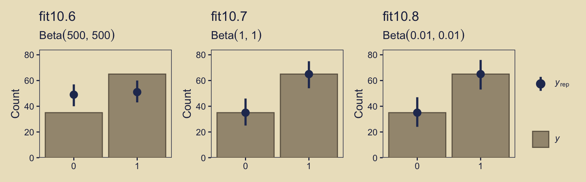
Instead of the default 10, this time we used 1,000 posterior simulations from each fit, which we summarized with dot and error bars. This method did a great job showing how little fit10.6 learned from the data. Another nice thing about this method is it reveals how similar the results are between fit10.7 and fit10.8, the two alternate versions of the anything’s-possible model. Also, did you notice how we used limits = c(0, 80) when combining the plots with patchwork? Holding the scale of the \(y\)-axis constant makes it easier to compare results across plots.
10.7 Bonus: There’s danger ahead
If you’re new to model comparison with Bayes factors, information criteria, model stacking and so on, you should know these methods are still subject to spirited debate among scholars. For a recent example, see Gronau and Wagenmakers’ (2019a) Limitations of Bayesian leave-one-out cross-validation for model selection, which criticized the LOO. Their paper was commented on by Navarro (2019), Chandramouli & Shiffrin (2019), and Vehtari et al. (2019). You can find Gronau and Wagenmakers’ (2019b) rejoinder here.
Session info
sessionInfo()R version 4.5.1 (2025-06-13)
Platform: aarch64-apple-darwin20
Running under: macOS Ventura 13.4
Matrix products: default
BLAS: /Library/Frameworks/R.framework/Versions/4.5-arm64/Resources/lib/libRblas.0.dylib
LAPACK: /Library/Frameworks/R.framework/Versions/4.5-arm64/Resources/lib/libRlapack.dylib; LAPACK version 3.12.1
locale:
[1] en_US.UTF-8/en_US.UTF-8/en_US.UTF-8/C/en_US.UTF-8/en_US.UTF-8
time zone: America/Chicago
tzcode source: internal
attached base packages:
[1] stats graphics grDevices utils datasets methods base
other attached packages:
[1] tidybayes_3.0.7 bayesplot_1.14.0 brms_2.23.0 Rcpp_1.1.0 ggforce_0.5.0 patchwork_1.3.2 lisa_0.1.2
[8] lubridate_1.9.4 forcats_1.0.1 stringr_1.6.0 dplyr_1.1.4 purrr_1.2.0 readr_2.1.5 tidyr_1.3.1
[15] tibble_3.3.0 ggplot2_4.0.1 tidyverse_2.0.0
loaded via a namespace (and not attached):
[1] RColorBrewer_1.1-3 tensorA_0.36.2.1 rstudioapi_0.17.1 jsonlite_2.0.0 magrittr_2.0.4
[6] TH.data_1.1-4 estimability_1.5.1 farver_2.1.2 nloptr_2.2.1 rmarkdown_2.30
[11] vctrs_0.6.5 minqa_1.2.8 base64enc_0.1-3 htmltools_0.5.8.1 distributional_0.5.0
[16] curl_7.0.0 StanHeaders_2.32.10 htmlwidgets_1.6.4 plyr_1.8.9 sandwich_3.1-1
[21] emmeans_1.11.2-8 zoo_1.8-14 igraph_2.2.0 mime_0.13 lifecycle_1.0.4
[26] pkgconfig_2.0.3 colourpicker_1.3.0 Matrix_1.7-3 R6_2.6.1 fastmap_1.2.0
[31] rbibutils_2.3 shiny_1.11.1 digest_0.6.37 colorspace_2.1-2 crosstalk_1.2.2
[36] labeling_0.4.3 timechange_0.3.0 polyclip_1.10-7 abind_1.4-8 compiler_4.5.1
[41] bit64_4.6.0-1 withr_3.0.2 S7_0.2.1 backports_1.5.0 inline_0.3.21
[46] shinystan_2.6.0 QuickJSR_1.8.1 pkgbuild_1.4.8 MASS_7.3-65 gtools_3.9.5
[51] loo_2.8.0 tools_4.5.1 httpuv_1.6.16 threejs_0.3.4 glue_1.8.0
[56] nlme_3.1-168 promises_1.3.3 grid_4.5.1 checkmate_2.3.3 reshape2_1.4.4
[61] generics_0.1.4 gtable_0.3.6 tzdb_0.5.0 hms_1.1.4 utf8_1.2.6
[66] pillar_1.11.1 ggdist_3.3.3 markdown_2.0 vroom_1.6.6 posterior_1.6.1
[71] later_1.4.4 splines_4.5.1 tweenr_2.0.3 lattice_0.22-7 survival_3.8-3
[76] bit_4.6.0 tidyselect_1.2.1 miniUI_0.1.2 knitr_1.50 reformulas_0.4.1
[81] arrayhelpers_1.1-0 gridExtra_2.3 V8_8.0.1 stats4_4.5.1 xfun_0.53
[86] rstanarm_2.32.2 bridgesampling_1.1-2 matrixStats_1.5.0 DT_0.34.0 rstan_2.32.7
[91] stringi_1.8.7 yaml_2.3.10 boot_1.3-31 evaluate_1.0.5 codetools_0.2-20
[96] cli_3.6.5 RcppParallel_5.1.11-1 shinythemes_1.2.0 xtable_1.8-4 Rdpack_2.6.4
[101] coda_0.19-4.1 svUnit_1.0.8 parallel_4.5.1 rstantools_2.5.0 dygraphs_1.1.1.6
[106] Brobdingnag_1.2-9 lme4_1.1-37 mvtnorm_1.3-3 scales_1.4.0 xts_0.14.1
[111] crayon_1.5.3 rlang_1.1.6 multcomp_1.4-29 shinyjs_2.1.0
Comments